فهرس بصري لنوى المجرات النشطة منتقى بصورة موحدة ويغطي السماء كلها
الملخص
أنشأنا فهرسًا يغطي السماء كلها لنوى المجرات النشطة البصرية ذات ، اعتمادًا على التحليل الطيفي البصري، انطلاقًا من العينة الأم من المجرات في مسح الانزياح الأحمر 2MASS (2MRS)، وهو تعداد شبه كامل للكون القريب. يتكون فهرسنا من 1929 AGN ذات خطوط عريضة، و6562 AGN ذات خطوط ضيقة تحقق معايير Kauffmann et al. (2003)، من بينها 3607 تحقق أيضًا معايير Kewley et al. (2001). ونورد أيضًا عروض خطوط الانبعاث، والفيضات، وأخطاء الفيض، ونسب الإشارة إلى الضجيج لكل المجرات في عينتنا الطيفية، بما يتيح للمستخدمين تخصيص معايير الانتقاء. وعلى الرغم من أننا عالجنا أطياف المجرات من عينة أم متجانسة معالجة موحدة، فإن حالات عدم التجانس تبقى قائمة بسبب الفروق في جودة الأطياف المتحصلة، المأخوذة بأجهزة مختلفة، وبسبب عدم توافر أطياف لـ  20% من المجرات. نقيس كميًا كيف تؤثر الفروق في الجودة الطيفية ليس فقط في معدلات كشف AGN بل أيضًا في نسب AGN ذات الخطوط العريضة إلى AGN ذات الخطوط الضيقة. ونجد أن حالات عدم التجانس تنشأ أساسًا من نسبة الإشارة إلى الضجيج (S/N) للمتصل الطيفي قرب خطوط الانبعاث موضع الاهتمام. ونلائم كسر AGN بوصفه دالة في S/N للمتصل، ونسند احتمالات AGN إلى المجرات التي لم تُعرّف على أنها AGN باستخدام الأطياف المتاحة. ينتج عن هذا التصحيح فهرس ملائم للدراسات الإحصائية. ويمهد هذا العمل أيضًا الطريق إلى فهرس قريب متجانس وكامل حقًا لـ AGN عبر تحديد المجرات التي تحتاج حالة AGN فيها إلى تحقق بأطياف أعلى جودة، وقياس الجودة الطيفية اللازمة لذلك.
20% من المجرات. نقيس كميًا كيف تؤثر الفروق في الجودة الطيفية ليس فقط في معدلات كشف AGN بل أيضًا في نسب AGN ذات الخطوط العريضة إلى AGN ذات الخطوط الضيقة. ونجد أن حالات عدم التجانس تنشأ أساسًا من نسبة الإشارة إلى الضجيج (S/N) للمتصل الطيفي قرب خطوط الانبعاث موضع الاهتمام. ونلائم كسر AGN بوصفه دالة في S/N للمتصل، ونسند احتمالات AGN إلى المجرات التي لم تُعرّف على أنها AGN باستخدام الأطياف المتاحة. ينتج عن هذا التصحيح فهرس ملائم للدراسات الإحصائية. ويمهد هذا العمل أيضًا الطريق إلى فهرس قريب متجانس وكامل حقًا لـ AGN عبر تحديد المجرات التي تحتاج حالة AGN فيها إلى تحقق بأطياف أعلى جودة، وقياس الجودة الطيفية اللازمة لذلك.
1 مقدمة
يعد تحليل الخطوط البصرية حاليا أقوى طريقة متاحة لتحديد النوى المجرية النشطة (AGNs) (Padovani et al., 2017). كما أن وجود خطوط بالمر العريضة أو غيابها هو أفضل مؤشر لاتجاه قرص التراكم (مواجه لنا أم حافي الحافة) ولـ “الطورس” الغباري على مقياس الفرسخ. تتوافر فهارس AGN منتقاة بانتظام وتغطي السماء كلها عند أطوال موجية أخرى، مثل فهرس AGN في الأشعة السينية الصلبة Swift-BAT (Baumgartner et al., 2013)، وفهرس AGN في الأشعة تحت الحمراء WISE (Assef et al., 2018)، وفهرس المجرات الراديوية القريبة في السماء كلها (van Velzen et al., 2012)، وحتى المتابعة الطيفية لفهرس BAT (مثلا، Koss et al., 2017). غير أنه لم يُنشأ سابقا فهرس AGN بصري منتقى بانتظام ويغطي السماء كلها.
إن فهرس AGN بصريا يغطي السماء كلها مهم للمقارنات مع الفهارس الشاملة عند أطوال موجية أخرى. فقد بينت الدراسات أن تحديد AGN في أطوال موجية مختلفة ينتقي عينات متداخلة لكنها غير متطابقة من AGNs (مثلا، Azadi et al., 2017). إضافة إلى ذلك، قد يفوت التحليل الطيفي البصري كسرا كبيرا من AGNs المحجوبة المكتشفة في الأشعة تحت الحمراء (مثلا، Goulding & Alexander, 2009). وقد اقترحت بعض الدراسات أن AGNs البصرية تمثل جمهرة منفصلة عن AGNs الأشعة السينية (Arnold et al., 2009) (لكن انظر (Dai & Farrar, 2017)، الذي يدحض ذلك)، كما يدور نقاش بشأن وجود ثنائية نمط في الشدة الراديوية (مثلا، Singal & Laxmi Singh, 2013). إلا أن هذه التحليلات أُجريت فقط على جزء صغير من السماء و/أو بعينة صغيرة. ومن الضروري إجراء إحصاء كامل لـ AGNs البصرية في الكون القريب لتحديد المدى الكامل للتداخل، أو غيابه، بين AGNs المنتقاة عند أطوال موجية مختلفة. كما سيوفر ذلك خطوة أولى في فهم ما إذا كانت هذه الاختلافات ناشئة ببساطة عن انحيازات الانتقاء أم عن فروق أكثر جوهرية في فيزياء AGNs، مثل ما إذا كانت AGNs المحددة في نطاقات موجية مختلفة ناتجة من اختلافات في حالات التراكم. وبالإضافة إلى ذلك، فإن فهرس AGN بصريا يغطي السماء كلها ضروري لدراسات الارتباط الإحصائية مع ظواهر قد تكون مرتبطة بـ AGN، مثل الأشعة الكونية فائقة الطاقة (مثلا، Abraham et al., 2007; Abreu et al., 2010)، أو للبحث عن ظواهر توجد فقط في بعض AGNs، مثل انبعاث ميزر الماء الموجود أساسا في مجموعة فرعية من AGNs ضيقة الخطوط (مثلا، Braatz et al., 2004; Kondratko et al., 2006; Zhu et al., 2011).
إن أكمل سرد لـ AGNs البصرية عند جميع الانزياحات الحمراء هو Veron-Cetty & Veron Catalogue of Quasars and Active Galactic Nuclei، الإصدار 13 (Véron-Cetty & Véron, 2010, فهرس VCV)، وهو تجميع لمرشحات AGN البصرية المنشورة في الأدبيات. ومع أن هذا الفهرس يضم عمليا كل فهارس AGN البصرية الأخرى، فإنه غير مكتمل وشديد اللاتجانس (Zaw et al., 2011)، لأن مرشحات AGN اكتشفت بأجهزة مختلفة ومن أرصاد تستهدف مناطق مختلفة من السماء وبأعماق مختلفة. كما أنه ليس “نقيا”، إذ يحتوي على مجرات مكونة للنجوم سبق أن صُنفت خطأ على أنها AGNs (Zaw et al., 2009; Terrano et al., 2012). وقد استُخدم في دراسات ارتباط إحصائية مثل المقارنة مع اتجاهات وصول الأشعة الكونية فائقة الطاقة (UHECRs) (مثلا، Abraham et al., 2007; Abreu et al., 2010). وللأسف، تجعل أوجه قصور الفهرس المستخدم في دراسات الارتباط النتيجة المثيرة والمستمرة، لكنها منخفضة الدلالة (2 إلى 2.7- )، غير قابلة للتفسير الموثوق. فمصادر UHECRs، ذات الطاقات الأعلى من eV، تخضع لقيد مزدوج: يجب أن تكون نشطة بما يكفي لتسريع الجسيمات إلى هذه الطاقات، وأن تقع ضمن مسافات من رتبة 100 Mpc بسبب تأثير Greisen-Zatsepin-Kuzmin (GZK). وتظل AGNs مرشحا رئيسيا لتسريع UHECRs، لكن يلزم فهرس موحد وكامل وقريب لـ AGN لتحديد ما إذا كانت UHECRs تنشأ من AGNs.
)، غير قابلة للتفسير الموثوق. فمصادر UHECRs، ذات الطاقات الأعلى من eV، تخضع لقيد مزدوج: يجب أن تكون نشطة بما يكفي لتسريع الجسيمات إلى هذه الطاقات، وأن تقع ضمن مسافات من رتبة 100 Mpc بسبب تأثير Greisen-Zatsepin-Kuzmin (GZK). وتظل AGNs مرشحا رئيسيا لتسريع UHECRs، لكن يلزم فهرس موحد وكامل وقريب لـ AGN لتحديد ما إذا كانت UHECRs تنشأ من AGNs.
أنشأنا فهرس AGN منتقى ومعالج بانتظام ويغطي السماء كلها من الأطياف البصرية للمجرات في مسح الانزياح الأحمر 2MASS (Huchra et al., 2012, 2MRS)، وهو خريطة شبه كاملة للكون القريب (حتى z0.09) وعينة أم موحدة. جمعنا أطيافا لـ  80% من المجرات، وبعد قطوع جودة أولية، طبقنا إجراءات موحدة لملاءمة الأطياف وتحديد AGN على العينة المتبقية. ونورد كذلك عروض خطوط الانبعاث وفيضها وأخطاء الفيض ونسب الإشارة إلى الضجيج، مما يتيح للمستخدمين تخصيص معايير الانتقاء. ورغم اكتمال عينة المجرات الأم لدينا، فإن العينة الطيفية جُمعت من مصادر مختلفة. وتمثل الفروق الذاتية في جودة أطياف عيناتنا الفرعية تحديا أمام بناء فهرس متجانس. ونستفيد من هذا التنوع لتكميم آثار جودة البيانات في تحديد AGN. وهذا مهم ليس للتحليل الحالي فحسب، بل أيضا عند مقارنة معدلات اكتشاف AGN ونسب AGN عريض الخطوط إلى AGN ضيق الخطوط المستخلصة من مسوح بصرية مختلفة. وفوق ذلك، نطور طريقة للتعويض إحصائيا عن اللاتجانس وعدم الاكتمال في تحديد AGN الناجمين عن انخفاض نسبة الإشارة إلى الضجيج الطيفية.
80% من المجرات، وبعد قطوع جودة أولية، طبقنا إجراءات موحدة لملاءمة الأطياف وتحديد AGN على العينة المتبقية. ونورد كذلك عروض خطوط الانبعاث وفيضها وأخطاء الفيض ونسب الإشارة إلى الضجيج، مما يتيح للمستخدمين تخصيص معايير الانتقاء. ورغم اكتمال عينة المجرات الأم لدينا، فإن العينة الطيفية جُمعت من مصادر مختلفة. وتمثل الفروق الذاتية في جودة أطياف عيناتنا الفرعية تحديا أمام بناء فهرس متجانس. ونستفيد من هذا التنوع لتكميم آثار جودة البيانات في تحديد AGN. وهذا مهم ليس للتحليل الحالي فحسب، بل أيضا عند مقارنة معدلات اكتشاف AGN ونسب AGN عريض الخطوط إلى AGN ضيق الخطوط المستخلصة من مسوح بصرية مختلفة. وفوق ذلك، نطور طريقة للتعويض إحصائيا عن اللاتجانس وعدم الاكتمال في تحديد AGN الناجمين عن انخفاض نسبة الإشارة إلى الضجيج الطيفية.
تنظم هذه الورقة على النحو الآتي. يصف القسم 2 عينتنا الطيفية. ويصف القسم 3 الطرائق التي استخدمناها لعزل خطوط الانبعاث وتحديد AGNs. وتعرض صلاحية طريقتنا والفحوص المتقاطعة في القسم 4. ويصف القسم 5 فهرس AGN لدينا. وتعرض دراسة أثر نسبة الإشارة إلى الضجيج الطيفية والدقة الطيفية في معدلات اكتشاف AGN في القسم 6، مع طريقة للتصحيح الإحصائي لعدم الاكتمال واللاتجانس الناتجين في القسم 6.3. وتلخص نتائجنا في القسم 7.
2 العينة الطيفية من المجرات
نتخذ مسح الانزياح الأحمر 2MASS (Huchra et al., 2012, 2MRS) عينة أم لبناء فهرسنا البصري لـ AGN في السماء كلها. إن فهرس مجرات 2MRS، وهو تجميع لانزياحات حمراء لـ 43,533 مجرة ذات (متوسط ) وعرض مجري ( باتجاه الانتفاخ المجري) في Two Micron All-Sky Survey (Skrutskie et al., 2006, 2MASS)، هو إحصاء شبه كامل (91% من السماء) لمجرات الكون القريب () فوق حد الفيض. وقد أُخذ قرابة نصف الانزياحات الحمراء في 2MRS من مسوح كبيرة تتوافر أطيافها الرقمية علنا، وهي 6dF Galaxy Survey (Jones et al., 2004, 2009, 6dF) وSloan Digital Sky Survey (Aihara et al., 2011, SDSS). وبالنسبة إلى ربع إضافي من المجرات التي لم تكن لها قياسات انزياح أحمر متاحة، أخذ فريق 2MRS أطيافا باستخدام مطياف FAst Spectrograph طويل الشق لتلسكوب Tillinghast (Fabricant et al., 1998, FAST) على عاكس Tillinghast ذي 1.5 m في Fred L. Whipple Observatory (FLWO) للمجرات الشمالية، وباستخدام مطياف CHIRON على تلسكوب SMARTS ذي 1.5 m ومطياف المحزوز R-C على تلسكوب Blanco ذي V.M. 4.0 m في Cerro Tololo Interamerican Observatory (CTIO) في الجنوب. أما الربع المتبقي من المجرات، فقد جُمعت انزياحاته الحمراء من NASA Extragalactic Database (NED)، ومن أكثر من 550 مرجع، ومن الفهرس الطيفي البصري CfA Redshift Catalog (ZCAT). التوزيعات السماوية لهذه العينات الفرعية المختلفة من 2MRS مبينة في الشكل 1. وتتوفر أطياف بصرية لمعظم عينة مجرات 2MRS.
باتجاه الانتفاخ المجري) في Two Micron All-Sky Survey (Skrutskie et al., 2006, 2MASS)، هو إحصاء شبه كامل (91% من السماء) لمجرات الكون القريب () فوق حد الفيض. وقد أُخذ قرابة نصف الانزياحات الحمراء في 2MRS من مسوح كبيرة تتوافر أطيافها الرقمية علنا، وهي 6dF Galaxy Survey (Jones et al., 2004, 2009, 6dF) وSloan Digital Sky Survey (Aihara et al., 2011, SDSS). وبالنسبة إلى ربع إضافي من المجرات التي لم تكن لها قياسات انزياح أحمر متاحة، أخذ فريق 2MRS أطيافا باستخدام مطياف FAst Spectrograph طويل الشق لتلسكوب Tillinghast (Fabricant et al., 1998, FAST) على عاكس Tillinghast ذي 1.5 m في Fred L. Whipple Observatory (FLWO) للمجرات الشمالية، وباستخدام مطياف CHIRON على تلسكوب SMARTS ذي 1.5 m ومطياف المحزوز R-C على تلسكوب Blanco ذي V.M. 4.0 m في Cerro Tololo Interamerican Observatory (CTIO) في الجنوب. أما الربع المتبقي من المجرات، فقد جُمعت انزياحاته الحمراء من NASA Extragalactic Database (NED)، ومن أكثر من 550 مرجع، ومن الفهرس الطيفي البصري CfA Redshift Catalog (ZCAT). التوزيعات السماوية لهذه العينات الفرعية المختلفة من 2MRS مبينة في الشكل 1. وتتوفر أطياف بصرية لمعظم عينة مجرات 2MRS.
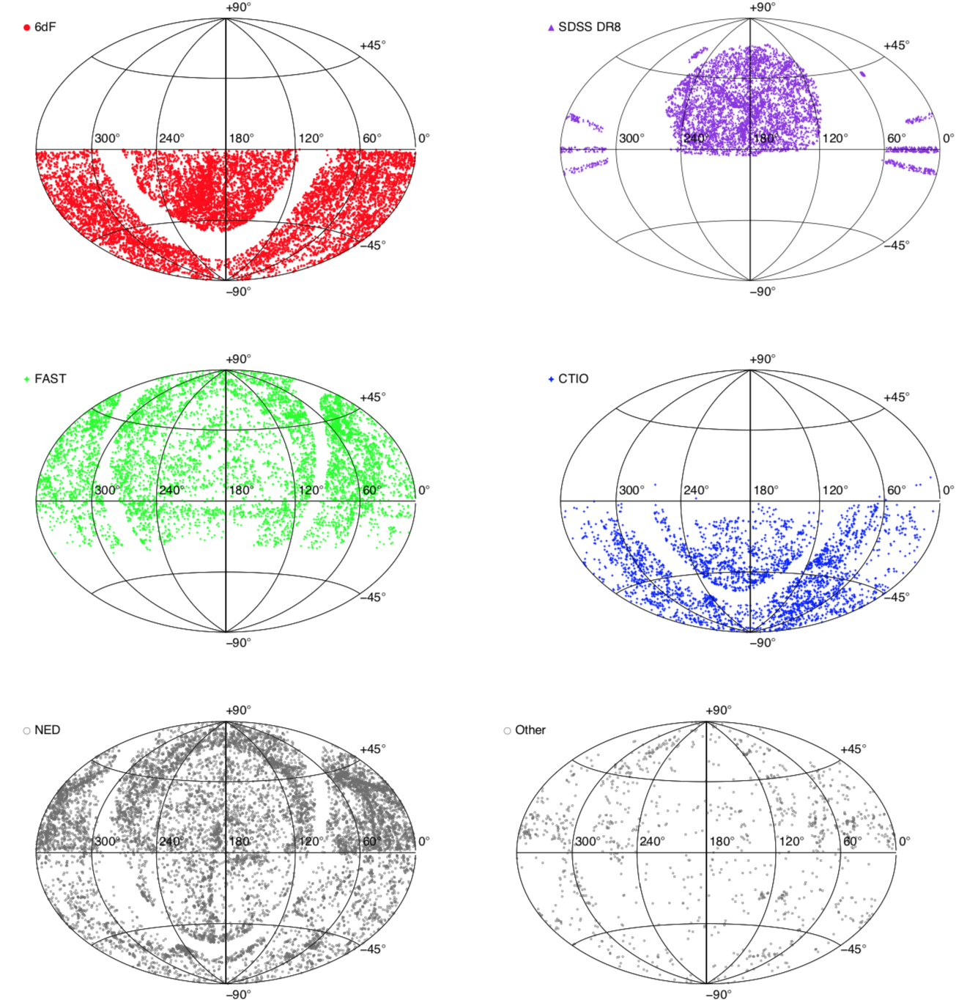
جمعنا الأطياف البصرية لـ  80% من مجرات 2MRS، وذلك بجمع الأطياف البصرية الرقمية العامة من SDSS و6dF، والحصول على أطياف FAST وCTIO غير العامة (بإذن من Lucas Macri)، وتنزيل الأطياف المتاحة في قاعدة بيانات NED. وطوبقت الأطياف مع أجسام 2MRS إما باستخدام أرقام تعريفها، حيث أمكن ذلك، أو بتحديد النظائر على أساس أن الفصل الزاوي وفارق الانزياح الأحمر يقعان ضمن أخطاء العينات المعنية. أما الأطياف 3229 التي جمعناها من NED فقد أُخذت بعشرات الأجهزة المختلفة، ولها تغطيات طيفية ودقات وجودات متباينة. ونظرا إلى أن معالجة هذه الأطياف معالجة موحدة تكاد تكون مستحيلة، فإننا لا ندرجها في عينتنا. وتتكون عينتنا الطيفية المخصصة لتحديد AGN من أربع عينات فرعية رئيسية، هي 6dF وSDSS وFAST وCTIO، بترتيب تنازلي حسب الحجم، كما يرد في الجدول 1.
80% من مجرات 2MRS، وذلك بجمع الأطياف البصرية الرقمية العامة من SDSS و6dF، والحصول على أطياف FAST وCTIO غير العامة (بإذن من Lucas Macri)، وتنزيل الأطياف المتاحة في قاعدة بيانات NED. وطوبقت الأطياف مع أجسام 2MRS إما باستخدام أرقام تعريفها، حيث أمكن ذلك، أو بتحديد النظائر على أساس أن الفصل الزاوي وفارق الانزياح الأحمر يقعان ضمن أخطاء العينات المعنية. أما الأطياف 3229 التي جمعناها من NED فقد أُخذت بعشرات الأجهزة المختلفة، ولها تغطيات طيفية ودقات وجودات متباينة. ونظرا إلى أن معالجة هذه الأطياف معالجة موحدة تكاد تكون مستحيلة، فإننا لا ندرجها في عينتنا. وتتكون عينتنا الطيفية المخصصة لتحديد AGN من أربع عينات فرعية رئيسية، هي 6dF وSDSS وFAST وCTIO، بترتيب تنازلي حسب الحجم، كما يرد في الجدول 1.
| 2MRS subsample | N2MRS | Nspectra | Nsample | Wavelength | Resolution |
| range (Å) | |||||
| 6dF | 11763 | 11762 | 10356 | V: 4000-5500 | FWHMV: 5-6 Å |
| R: 5500-7500 | FWHMR: 9-12 Å | ||||
| SDSS | 7069 | 7069 | 7069 | 3800-9200 | 1800-2000 |
| FAST | 7590 | 7547 | 6271 | 3500-7400 | FWHM: 5 Å |
| CTIO | 3293 | 3286 | 2851 | 3700-7200 | FWHM: 7.0 Å |
| NED | 12694 | 3229 | – | – | – |
| Others | 1124 | 0 | – | – | – |
| total | 43533 | 32893 | 26547 | – | – |
-
•
يبين الجدول العدد الإجمالي لمجرات 2MRS في كل عينة فرعية، N2MRS، والعدد الذي نملك له أطيافا، Nspectra، والعدد في عينتنا الطيفية النهائية بعد تطبيق قطعي المستوى المجري (
 ) والتلوث التيلوري، Nsample، إضافة إلى مجال الأطوال الموجية ودقة كل عينة فرعية معالجة. وقد أُخذت أطياف 6dF في نطاقين، هما V-band وR-band، ولكل منهما دقة مختلفة.
) والتلوث التيلوري، Nsample، إضافة إلى مجال الأطوال الموجية ودقة كل عينة فرعية معالجة. وقد أُخذت أطياف 6dF في نطاقين، هما V-band وR-band، ولكل منهما دقة مختلفة.
يرد الوصف التفصيلي للفروق بين أطياف عيناتنا الفرعية في Huchra et al. (2012). وقد أدرجنا المعلمات ذات الصلة، أي مجالات الأطوال الموجية والدقة الطيفية، للأطياف في كل عينة فرعية (6dF وSDSS وFAST وCTIO) في الجدول 1. ويتألف كل طيف من 6dF من طيفين بدقتين طيفيتين مختلفتين: طيف V-band بمجال أطوال موجية 3900-5600 Å ، وطيف R-band بمجال أطوال موجية 5400–7500 Å. وإضافة إلى ذلك، تختلف نسب الإشارة إلى الضجيج (S/N) بين أطياف العينات الفرعية المختلفة. نعرّف S/N في كل حاوية طول موجي بأنها قيمة البيانات مقسومة على الخطأ المعطى في طيف الخطأ. وتعتمد قيم S/N على الطول الموجي. وتعرض الشكل 2 المتوسطات والانحرافات المعيارية لـ S/N في العينات الفرعية عند أطوال موجية (متصلة) متعددة.
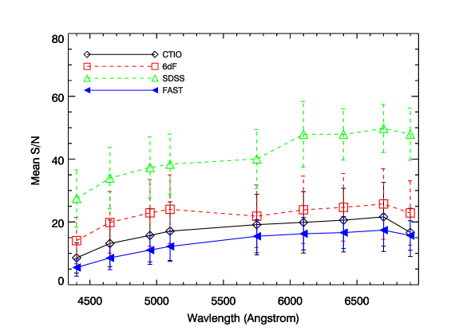
إجمالا، تمتلك أطياف SDSS أوسع تغطية في الطول الموجي، وأفضل دقة طيفية، وأعلى S/N (في المتوسط). أما أطياف 6dF وFAST وCTIO فلها S/N أقل من أطياف SDSS، لكنها متقاربة فيما بينها. إضافة إلى ذلك، تمتلك عينة SDSS الفرعية معايرة مطلقة للفيض، في حين لا تمتلكها العينات الفرعية الثلاث الأخرى.
يمكن أن يتداخل نطاق B التيلوري (6860-6890 Å)، الناتج من امتصاص الضوء بجزيئات الغلاف الجوي للأرض، مع مركب [N II]- في مجال الانزياح الأحمر  11
1
ملاحظة: هذه الانزياحات الحمراء في إطار سكون الأرض وتُلاءم من الأطياف. وتتغير هذه الانزياحات على مدار السنة بسبب حركة الأرض حول الشمس. ولإزالة هذا الاعتماد الزمني، فإن القيم المدرجة في الفهرس هي انزياحات حمراء “مركزية الشمس”، أي في الإطار المرجعي للشمس وثابتة على مدار السنة. وسيؤدي هذا التداخل إلى فيوض غير صحيحة لـ [N II] و . وعلى الرغم من أن أطياف SDSS صُححت من هذا التلوث التيلوري، فإن هذا التصحيح لم يطبق على عينات 6dF وFAST وCTIO الفرعية. لذلك نستبعد من عينتنا مجرات 6dF وFAST وCTIO (
11
1
ملاحظة: هذه الانزياحات الحمراء في إطار سكون الأرض وتُلاءم من الأطياف. وتتغير هذه الانزياحات على مدار السنة بسبب حركة الأرض حول الشمس. ولإزالة هذا الاعتماد الزمني، فإن القيم المدرجة في الفهرس هي انزياحات حمراء “مركزية الشمس”، أي في الإطار المرجعي للشمس وثابتة على مدار السنة. وسيؤدي هذا التداخل إلى فيوض غير صحيحة لـ [N II] و . وعلى الرغم من أن أطياف SDSS صُححت من هذا التلوث التيلوري، فإن هذا التصحيح لم يطبق على عينات 6dF وFAST وCTIO الفرعية. لذلك نستبعد من عينتنا مجرات 6dF وFAST وCTIO ( 14%) الواقعة ضمن هذا المجال من الانزياح الأحمر، إلا إذا أظهرت أطيافها علامة واضحة على انبعاث عريض.
14%) الواقعة ضمن هذا المجال من الانزياح الأحمر، إلا إذا أظهرت أطيافها علامة واضحة على انبعاث عريض.
تحتوي عينة 2MRS على انزياحات حمراء لمجرات تقع ضمن أو (باتجاه الانتفاخ المجري) من المستوى المجري. غير أنها تأتي أساسا من عينة NED، وفي هذه المنطقة يكون عدم الاكتمال أعلى. لذلك نفرض قطعا أكبر للمستوى المجري مقداره لتحسين تجانس الاكتمال في عينتنا. وتتكون عينتنا الطيفية النهائية من 26,547 مجرة. ويرد التفصيل الكامل للعينة الأم 2MRS، وعدد المجرات التي تتوافر لها أطياف بصرية، والعينة النهائية لتحديد AGN بعد تطبيق المتطلبات أعلاه، في الجدول 1. ويوضح الشكل 3 نسبة المجرات في عينتنا الطيفية النهائية إلى عدد المجرات في 2MRS، عبر السماء وبحسب الانزياح الأحمر. واكتمال عينتنا متجانس إلى حد كبير في نصف الكرة الجنوبي حيث تهيمن 6dF. أما في الشمال، فيبلغ الاكتمال أعلى قيمة داخل بصمة SDSS. ويكون الاكتمال بحسب الانزياح الأحمر متجانسا إلى حد كبير، باستثناء مجال التلوث التيلوري حيث لا تتوافر لدينا إلا بيانات SDSS.
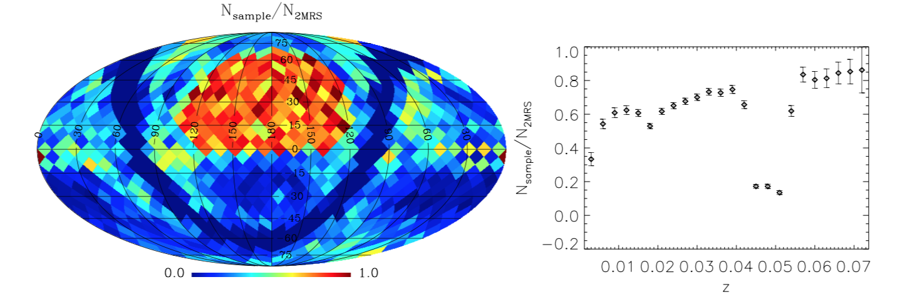
3 ملاءمة الأطياف وتحديد AGN
نحدد AGNs بطرح الامتصاص النجمي والانبعاث المتصل من المجرة المضيفة أولا، ثم تحليل خطوط الانبعاث.
3.1 طرح مساهمة المجرة المضيفة في الطيف
يحتوي الطيف البصري للمجرة على مزيج من مساهمات المجرة وAGN، إن كان موجودا. ونطرح الامتصاص النجمي والانبعاث المتصل من المجرة بنمذجتهما عبر ملاءمة الطيف الكامل باستخدام نموذج للسكان النجميين. ويُبنى نموذج السكان النجميين (SPM) من مكتبة نجمية، أي مجموعة أطياف تجريبية أو نظرية لنجوم ذات درجات حرارة وفلزيات مختلفة، مع افتراض دالة كتلة ابتدائية (IMF) للنجوم في دفعة معينة من تشكل النجوم، والتكامل على طول خط تساوي العمر، وهو منحنى في مخطط Hertzsprung-Russell تشغله نجوم متساوية العمر والفلزية. وينتج من ذلك مجموعة من السكان النجميين البسيطين (SSPs)، حيث يمثل كل SSP طيفا لعنقود نجمي ذي عمر وفلزية محددين. وبما أن الخيارات الممكنة للمكتبات النجمية وIMFs وخطوط تساوي العمر كثيرة، تتوافر SPMs عديدة. وقد درس Chen et al. (2018) بالتفصيل الفروق المنهجية في تحديد AGN الناتجة من اختيار SPM.
تخضع SPMs المبنية على مكتبات نجمية نظرية لاعتماد نموذجي في مقاطع الخطوط ولارتيابات العتامة. أما المكتبات النجمية التجريبية فلا تعتمد على النموذج، لكنها تحتاج إلى عدد كبير من النجوم المرصودة يغطي فضاء المعلمات بأكمله قدر الإمكان. ويُبنى MILES SPM (Vazdekis et al., 2010) من مكتبة MILES النجمية (Falcón-Barroso et al., 2011)، وهي حاليا أكبر مكتبة نجمية تجريبية وأفضلها معايرة. وتتكون مكتبة MILES النجمية من 985 نجوم بمجال أطوال موجية 3525-7500 Å ودقة طيفية 2.5 Å. في هذا العمل نستخدم MILES SPM، مع IMF أحادية الميل ذات ميل 1.3، وهي Salpeter IMF (Salpeter, 1955)، وخط تساوي العمر Padova (Girardi et al., 2000). ويحتوي النموذج على SSPs بأعمار من 63 Myr إلى 17.78 Gyr وبفلزيات تتراوح بين [M/H] = -2.32 و+0.22.
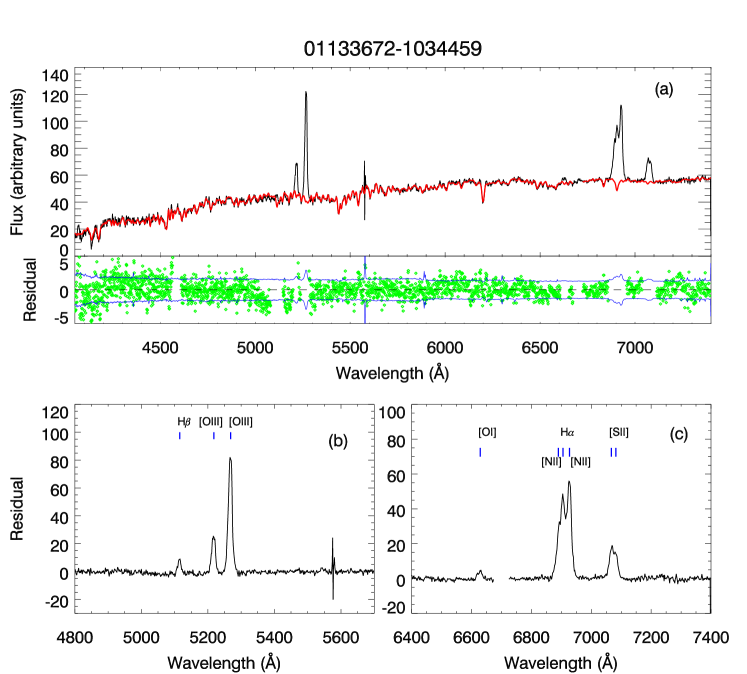
نحجب، لكل طيف في عينة مجراتنا، مجالات الأطوال الموجية التي تضم خطوط الانبعاث ونطاقات التلوث التيلوري. وبما أن كل مجرة من 6dF رُصدت في نطاقين، V (4000-5500 Å) وR (5500-7500 Å)، فإننا ندمجهما في طيف واحد بالمطابقة في منطقة التداخل، ونملس الطيف المدمج إلى الدقة الأقل (R-band) قبل الملاءمة. وتُعرّض SSPs لتطابق الدقة الطيفية للأطياف المرصودة. ويُلائم كل طيف بيانات بوصفه تركيبة خطية من MILES SSPs باستخدام برنامج ملاءمة الطيف الكامل pPXF (Cappellari & Emsellem, 2004). وتُلائم نسبة كبيرة من الأطياف بتركيبة خطية من SSP واحد أو اثنين، وتضم جميعها تقريبا أقل من خمسة SSPs في التركيبة الخطية. وبالنسبة إلى أطياف SDSS، تضاف إلى القوالب عملية تطبيع كلية فقط. أما بالنسبة إلى أطياف 6dF وCTIO وFAST التي لا تمتلك معايرة مطلقة للفيض، فتضيف خوارزمية الملاءمة كثيرة حدود حتى الرتبة الثامنة للتعامل مع آثار الجهاز في الشكل الطيفي. وتزيد خوارزمية الملاءمة تعريض القوالب بنواة Gaussian لمحاكاة تشتت السرعات النجمية في الطيف المتكامل للمجرة المضيفة. ويُشترط في الملاءات أن تعطي تشتتا في السرعات النجمية فيزيائيا، km/s، حتى تعد مقبولة. ويستخدم روتين الملاءمة طيف الخطأ المرفق بالبيانات لحساب قيمة  المختزلة لكل ملاءمة مقبولة. وتُعتمد الملاءمة المقبولة ذات أدنى
المختزلة لكل ملاءمة مقبولة. وتُعتمد الملاءمة المقبولة ذات أدنى  مختزلة بوصفها أفضل طيف ملائم للمجرة. ويعرض الشكل 4 طيفا نموذجيا من عينة SDSS (بالأسود)، والخطأ (بالأزرق)، وأفضل ملاءمة (بالأحمر)، والأطياف الباقية بعد الطرح في المناطق المحيطة بخطوط الانبعاث المستخدمة لتحديد AGN.
مختزلة بوصفها أفضل طيف ملائم للمجرة. ويعرض الشكل 4 طيفا نموذجيا من عينة SDSS (بالأسود)، والخطأ (بالأزرق)، وأفضل ملاءمة (بالأحمر)، والأطياف الباقية بعد الطرح في المناطق المحيطة بخطوط الانبعاث المستخدمة لتحديد AGN.
في الحالات النادرة التي تفشل فيها ملاءمة القوالب (5 أطياف في SDSS، و14 في FAST، و164 في 6dF، و386 في CTIO)، نلائم المتصل عند الأطوال الموجية على جانبي خطوط الانبعاث موضع الاهتمام ثم نستوفيه. وفي هذه الحالات لا تُطرح مساهمات الامتصاص النجمي في و . فإذا فشلت ملاءمة القالب لعدم وجود امتصاص ملحوظ، فإن هذا الإجراء لا يسبب أي انحياز. أما إذا كان الفشل ناجما عن انخفاض S/N الطيفية، فستُقدر انبعاثات و بأقل من قيمتها، وستُقدر نسب الخطوط بأكبر من قيمتها، مما يؤدي منهجيا إلى عدد أكبر من المجرات المصنفة على أنها AGNs. وتُعلّم AGNs التي تحدد بعد إجراء “الملاءمة المحلية” هذا في الفهرس، ولا تشكل إلا بضع نسب مئوية من عينة AGN الكلية.
3.2 تصحيح أطياف الخطأ المقدرة والمفقودة
يعرض الشكل 5 توزيعات  المختزلة الناتجة من أفضل التركيبات الخطية لـ SSP. وكما هو متوقع، تبلغ توزيعات عينات SDSS و6dF وFAST الفرعية (اللوحة اليسرى) ذروتها قرب وتتبع توزيعا
المختزلة الناتجة من أفضل التركيبات الخطية لـ SSP. وكما هو متوقع، تبلغ توزيعات عينات SDSS و6dF وFAST الفرعية (اللوحة اليسرى) ذروتها قرب وتتبع توزيعا  اعتياديا. ويرجح أن الفروق في العروض تعود إلى اختلاف الدقة الطيفية بين العينات الفرعية، أي اختلاف أعداد حاويات الأطوال الموجية، ومن ثم أعداد درجات الحرية. أما عينة CTIO الفرعية فتُظهر ذروة ثانية عريضة تمتد إلى .
اعتياديا. ويرجح أن الفروق في العروض تعود إلى اختلاف الدقة الطيفية بين العينات الفرعية، أي اختلاف أعداد حاويات الأطوال الموجية، ومن ثم أعداد درجات الحرية. أما عينة CTIO الفرعية فتُظهر ذروة ثانية عريضة تمتد إلى .
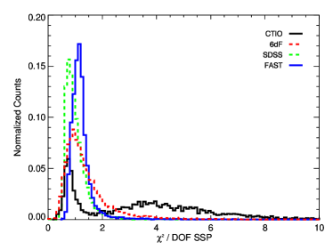
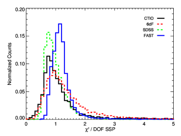
 المختزلة الناتجة من ملاءمة SSP قبل تصحيح أطياف خطأ CTIO (يسارا) وبعده (يمينا).
المختزلة الناتجة من ملاءمة SSP قبل تصحيح أطياف خطأ CTIO (يسارا) وبعده (يمينا).نفحص اختيارا عشوائيا من أطياف CTIO ذات قيم  مختزلة كبيرة من ملاءمة SSP، ونجد أن أخطاء البواقي تُظهر توزيعا عشوائيا (Gaussian) بدلا من انحراف منهجي عن الملاءمة. لذلك نشتبه في أن الأخطاء مقدرة بأقل من قيمتها بعامل ضربي موحد. وبما أن طيف الخطأ يستخدم لتحديد S/N لفيوض خطوط الانبعاث، فيلزم تصحيح الأخطاء.
مختزلة كبيرة من ملاءمة SSP، ونجد أن أخطاء البواقي تُظهر توزيعا عشوائيا (Gaussian) بدلا من انحراف منهجي عن الملاءمة. لذلك نشتبه في أن الأخطاء مقدرة بأقل من قيمتها بعامل ضربي موحد. وبما أن طيف الخطأ يستخدم لتحديد S/N لفيوض خطوط الانبعاث، فيلزم تصحيح الأخطاء.
للبحث عن سبب كامن لسوء تقدير الأخطاء، نرسم قيم  المختزلة من SSP مقابل الموضع السماوي والانزياح الأحمر وتاريخ الرصد. ونجد أنه في أي يوم معين أو مجموعة أيام متجاورة، وهو ما نسميه “تشغيلة رصد”، يمتلك توزيع
المختزلة من SSP مقابل الموضع السماوي والانزياح الأحمر وتاريخ الرصد. ونجد أنه في أي يوم معين أو مجموعة أيام متجاورة، وهو ما نسميه “تشغيلة رصد”، يمتلك توزيع  المختزلة ذروة واحدة، لكن الذرى تقع عند قيم مختلفة في تشغيلات الرصد المختلفة. وهذا يشير إلى أن الأخطاء قُدرت بأقل من قيمتها على نحو موحد في بعض التشغيلات. ولتصحيح هذا النقص في التقدير، نلائم توزيع
المختزلة ذروة واحدة، لكن الذرى تقع عند قيم مختلفة في تشغيلات الرصد المختلفة. وهذا يشير إلى أن الأخطاء قُدرت بأقل من قيمتها على نحو موحد في بعض التشغيلات. ولتصحيح هذا النقص في التقدير، نلائم توزيع  المختزلة لكل تشغيلة بدالة توزيع
المختزلة لكل تشغيلة بدالة توزيع  مع السماح لقيمة الذروة بالتغير. ثم نضرب الأخطاء في كل حاوية طول موجي لكل طيف في التشغيلة بالجذر التربيعي لقيمة الذروة. وتعرض اللوحة اليمنى من الشكل 5 توزيعات
مع السماح لقيمة الذروة بالتغير. ثم نضرب الأخطاء في كل حاوية طول موجي لكل طيف في التشغيلة بالجذر التربيعي لقيمة الذروة. وتعرض اللوحة اليمنى من الشكل 5 توزيعات  المختزلة بعد التصحيح؛ إذ أصبح لتوزيع CTIO ذروة واحدة قرب 1.0 كما هو متوقع. ومن توزيعات
المختزلة بعد التصحيح؛ إذ أصبح لتوزيع CTIO ذروة واحدة قرب 1.0 كما هو متوقع. ومن توزيعات  المختزلة، نجد القيم التي تضم 99% من المجرات ذات الملاءات الناجحة، وهي 2.55 و6.05 و3.75 و7.15، لـ SDSS و6dF وFAST وCTIO على الترتيب؛ ولا نحتفظ إلا بالمجرات ذات
المختزلة، نجد القيم التي تضم 99% من المجرات ذات الملاءات الناجحة، وهي 2.55 و6.05 و3.75 و7.15، لـ SDSS و6dF وFAST وCTIO على الترتيب؛ ولا نحتفظ إلا بالمجرات ذات  مختزلة أصغر من هذه القيم.
مختزلة أصغر من هذه القيم.
إضافة إلى الأخطاء سيئة التقدير، لم يكن لـ 218 طيفا في عينة CTIO أطياف خطأ مرافقة. وبالنسبة إلى هذه المجرات، استخدمنا متوسط أطياف الخطأ المصححة الخاصة بتشغيلة رصد المجرة. وبالمثل، لم يكن لـ 35 طيفا من FAST أطياف خطأ. ولهذه الأطياف نستخدم متوسط أطياف الخطأ في عينة FAST. وعلى الرغم من أن أطياف الخطأ المتوسطة هذه ليست أطياف الخطأ الحقيقية، فإنها أفضل التقديرات المتاحة.
3.3 تحديد AGN
في النموذج الموحد لـ AGNs (مثلا، Antonucci, 1993; Urry & Padovani, 1995)، إذا كانت رؤيتنا لـ AGN غير محجوبة، أي مرصودة من جهة الوجه، فإن الطيف يحتوي على مركبات و موسعة دوبلريا من سحب الغاز التي تدور بسرعة حول الثقب الأسود فائق الكتلة (SMBH) ضمن الفرسخ المركزي من AGN. ويسمى مثل هذا النظام AGN “عريض الخطوط” أو من “النمط 1”. أما إذا رُصد AGN من الحافة، عبر المادة الغبارية الحاجبة على مقياس الفرسخ، فلا تظهر في الطيف إلا الخطوط المحظورة الضيقة، الآتية من سحب تبعد مئات إلى آلاف الفراسخ عن المحرك المركزي. ويسمى هذا النوع من AGN “ضيق الخطوط” أو من “النمط 2”.
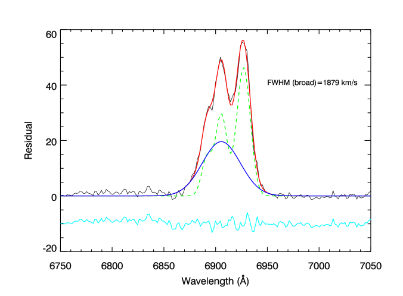
الخطوط التي نستخدمها لتحديد AGN هي العريض والضيق، والضيق، و[N II] ، و[O III] 22
2
نلاحظ أن خطي [Sii] و[Oi] يمكن استخدامهما لتحديد AGN إضافة إلى [N II]أو بدلا منه. غير أن هذين الخطين عادة أضعف من [N II]. وبما أن نسبة كبيرة من أطيافنا ذات S/N منخفضة، فإننا نقيم أقوى الخطوط فقط. بعد طرح مساهمة المجرة المضيفة، يُلائم الطيف الباقي بدوال Gaussian لتحديد العرض الكامل عند نصف العظمى (FWHM) وفيض كل واحد من هذه الخطوط الأربعة. وبالنسبة إلى مركب [N II]- حيث تمتزج الخطوط معا، نستخدم ثلاث أو أربع دوال Gaussian لملاءمة جميع مكونات الانبعاث في آن واحد. يبين الشكل 6 مثالا على ملاءمة Gaussian الرباعية (خطي [N II] الضيقين، والعريض، والضيق). ويُحصل فيض الخط بجمع الفيوض في حاويات الأطوال الموجية ضمن  من الذروة الملائمة، حيث
من الذروة الملائمة، حيث  هو العرض الملائم للـ Gaussian. ويُحصل خطأ الفيض بجمع قيمة كل حاوية ضمن
هو العرض الملائم للـ Gaussian. ويُحصل خطأ الفيض بجمع قيمة كل حاوية ضمن  من الذروة الملائمة في طيف الخطأ جمعا تربيعيا. ويعد خط العريض مكتشفا إذا كان فيض العريض مقسوما على خطأ الفيض أكبر من 2.0. وإذا لم تحقق مركبة العريضة معيار خط انبعاث، يعاد ملاءمة [N II]- بثلاث دوال Gaussian للحصول على تحديد أفضل لفيوض الخطوط الضيقة.
من الذروة الملائمة في طيف الخطأ جمعا تربيعيا. ويعد خط العريض مكتشفا إذا كان فيض العريض مقسوما على خطأ الفيض أكبر من 2.0. وإذا لم تحقق مركبة العريضة معيار خط انبعاث، يعاد ملاءمة [N II]- بثلاث دوال Gaussian للحصول على تحديد أفضل لفيوض الخطوط الضيقة.
نحدد AGNs من النمط 1 بوجود مركبة عريضة من ذات S/N  2.0 (3.0 لـ SDSS) وبالاشتراط واسع الاستخدام (مثلا، Eun et al., 2017; Ho et al., 1997; Schneider et al., 2010; Stern & Laor, 2012; Vanden Berk et al., 2006) أن يكون العرض الكامل عند نصف العظمى (FWHM)
2.0 (3.0 لـ SDSS) وبالاشتراط واسع الاستخدام (مثلا، Eun et al., 2017; Ho et al., 1997; Schneider et al., 2010; Stern & Laor, 2012; Vanden Berk et al., 2006) أن يكون العرض الكامل عند نصف العظمى (FWHM)  1000 km s-1. وبما أن عموما أضعف، فإننا لا نفرض أي متطلبات على وجود خط عريض. لكن إذا وجدنا خط عريضا دون خط عريض، نقبل تلك المجرة أيضا بوصفها AGN من النمط 1. ولا توجد في عينتنا إلا خمس مجرات من هذا القبيل. وقد لا تُعرف مركبة عريضة ضعيفة في حالات انخفاض نسبة الإشارة إلى الضجيج.
1000 km s-1. وبما أن عموما أضعف، فإننا لا نفرض أي متطلبات على وجود خط عريض. لكن إذا وجدنا خط عريضا دون خط عريض، نقبل تلك المجرة أيضا بوصفها AGN من النمط 1. ولا توجد في عينتنا إلا خمس مجرات من هذا القبيل. وقد لا تُعرف مركبة عريضة ضعيفة في حالات انخفاض نسبة الإشارة إلى الضجيج.
عندما لا يوجد خط عريض، نستخدم نسب فيوض الخطوط المحظورة الضيقة، [O III]و[N II]، إلى فيوض خطوط بالمر الهيدروجينية الضيقة و، على الترتيب، لتحديد AGNs. ويمكن لتشكل النجوم أيضا أن يثير الخطوط المحظورة، لكن نسبتها إلى خطوط بالمر تكون أدنى من نسب الخطوط المحظورة المثارة بواسطة AGNs. وقد اقترح Baldwin, Phillips, & Terlevich (1981) استخدام هذه النسب الخطية أولا، ويعرف رسم نسبة [O III]/ مقابل نسبة [N II]/ باسم مخطط BPT. ويوجد خطا فصل يستخدمان عادة للتمييز بين AGNs والمجرات المكونة للنجوم، وهما:
الأول، الذي طوره Kewley et al. (2001)، يستند إلى نمذجة نظرية لأقصى نسب خطوط ممكنة في تشكل النجوم، والثاني، الذي طوره Kauffmann et al. (2003)، يستند إلى دراسات تجريبية لمجرات SDSS. فالمجرات الواقعة فوق خط Kewley et al. (2001) يكون انبعاث خطوطها المحظورة مسيطرا عليه من AGN، أما المجرات الواقعة بين خطي Kewley et al. (2001) وKauffmann et al. (2003) فهي مجرات “مركبة” ذات مساهمات مختلطة من AGN ومن تشكل النجوم. ونستخدم خط Kauffmann et al. (2003) لتحديد AGNs في فهرسنا. وإذا كان AGN يقع أيضا فوق خط Kewley et al. (2001) فإننا نعلمه كذلك.
4 التحقق من الطريقة والفحوص المتقاطعة
توفر عينة SDSS الفرعية عينة مثالية لفحص طريقتنا ونتائجنا. فهي تمتلك أطيافا ذات أعلى S/N ومعايرة فيض مطلقة، وقد نُشرت قياسات الخطوط للعينة (مثلا، Aihara et al., 2011; Greene & Ho, 2007; Thomas et al., 2013). ونستخدم أيضا نتائج أطياف SDSS للمقارنة مع تلك المستخرجة من 6dF للمجرات التي رُصدت بكلا الجهازين. تتيح لنا هذه الخطوة دراسة آثار نسبة الإشارة إلى الضجيج. وبما أن أطياف 6dF وFAST وCTIO ذات جودة بيانات متشابهة، فيمكن تطبيق نتائج مقارنة SDSS-6dF على عينتي FAST وCTIO الفرعيتين.
4.1 التحقق من تحديد AGN من النمط 1
نفحص أولا تحديدنا لـ AGN عريض الخطوط. نقارن تحديدنا لـ AGN عريض الخطوط بعينة Seyfert 1 في SDSS المنشورة بواسطة Greene & Ho (2007). نطابق 2MRS مع هذه العينة ونجد 176 AGNs من النمط 1 يحدد Greene & Ho (2007) أن لها FWHM  1000 km/s. وجميعها تُعرف في تحليلنا بوصفها AGNs من النمط 1. لذلك نحن واثقون من أن طريقتنا تحدد AGNs عريضة الخطوط على نحو صحيح.
1000 km/s. وجميعها تُعرف في تحليلنا بوصفها AGNs من النمط 1. لذلك نحن واثقون من أن طريقتنا تحدد AGNs عريضة الخطوط على نحو صحيح.
4.2 التحقق من تحديد AGN من النمط 2
للتحقق من تحديد AGN ضيق الخطوط، نبدأ بفحص قياسات الفيض لدينا. يوضح الشكل 7 مقارنة فيوض الخطوط الضيقة من SDSS Data Release 8 (Aihara et al., 2011, DR8) بقياساتنا، للخطوط الأربعة المستخدمة في تحديد AGN. وترتبط قياساتنا ارتباطا وثيقا بقياسات SDSS. وجميع الميول الأربعة قريبة من 1.0، وإن اختلفت قليلا من خط إلى آخر، كما تُظهر العلاقة بعض التشتت. ونلاحظ أننا نستخدم نموذج السكان النجميين MILES (SPM)، بينما يستخدم SDSS نموذج Bruzual & Charlot (2003) (BC03) SPM، لذلك نتوقع بعض الفروق. وكما نشرح أدناه، مع أن BC03 كان أفضل نموذج متاح في زمن DR8، فإن قوالب MILES تستند إلى مكتبة نجمية أفضل وتعطي نتائج أصح.
يعرض الشكل 8 مقارنات بين أخطاء الفيض من DR8 وتلك التي حددناها. وتُظهر الأخطاء اتفاقا عاما، لكن التشتت أكبر من التشتت في الفيوض. ونلاحظ أن هذه الأخطاء لا تشمل مساهمات إجراءات طرح مساهمة المجرة وملاءمة خطوط الانبعاث. وقد أجرينا دراسات Monte Carlo غيّرنا فيها الضجيج وكررنا إجراء الملاءمة 100 مرات لكل طيف لـ  20 مجرة. وتبين هذه الدراسات أن مساهمة إجراء الملاءمة يمكن أن تزيد الخطأ حتى عامل اثنين. غير أن تنفيذ هذا الإجراء على جميع الأطياف كثيف حسابيا إلى حد لا يجعله عمليا؛ ومع ذلك، فإن اتساق كل من الفيوض وأخطاء الفيض مع المنشور من SDSS يمنحنا ثقة بأن طريقتنا سليمة، وأن قطوع S/N لدينا قابلة للمقارنة مع تحليلات أخرى.
20 مجرة. وتبين هذه الدراسات أن مساهمة إجراء الملاءمة يمكن أن تزيد الخطأ حتى عامل اثنين. غير أن تنفيذ هذا الإجراء على جميع الأطياف كثيف حسابيا إلى حد لا يجعله عمليا؛ ومع ذلك، فإن اتساق كل من الفيوض وأخطاء الفيض مع المنشور من SDSS يمنحنا ثقة بأن طريقتنا سليمة، وأن قطوع S/N لدينا قابلة للمقارنة مع تحليلات أخرى.
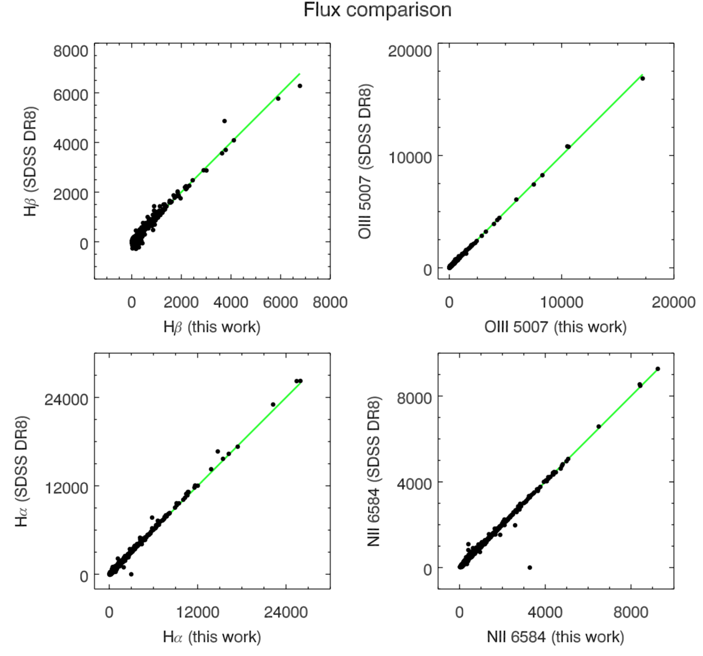
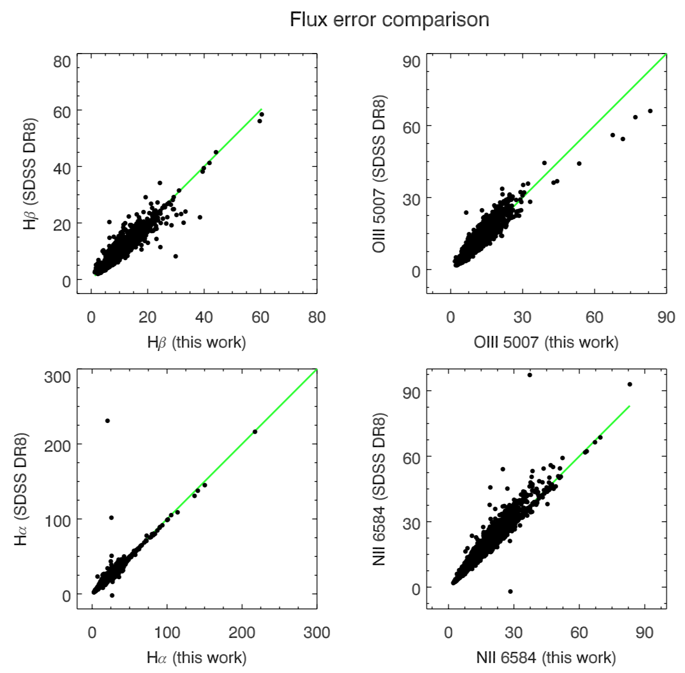
4.3 اعتماد النسب الخطية على النماذج السكانية النجمية
ترتبط فيوض الخطوط التي حسبناها جيدا بالقيم المنشورة في SDSS DR8، لكن الاختبار الأهم لتحديد AGN هو ما إذا كانت نسب الخطوط متفقة أيضا. وتختلف نسب الخطوط لدينا منهجيا عن نسب SDSS DR8 وعن نسب Thomas et al. (2013)، وكلاهما متاح علنا لعينة SDSS الكاملة. وتعود هذه الفروق إلى نماذج السكان النجميين المختلفة المستخدمة لطرح مساهمة المجرة المضيفة في التحليلات الثلاثة. وكما فصلنا في القسم 3.1، نستخدم نموذج السكان النجميين MILES (Vazdekis et al., 2010) (SPM)، بينما يستخدم SDSS DR8 نموذج Bruzual & Charlot (2003, BC03) SPM، ويستخدم Thomas et al. (2013) فقط قوالب السكان النجميين البسيطين (SSPs) ذات الفلزية الشمسية من نموذج Maraston & Strömbäck (2011) SPM المبني على MILES (MS11solar). وقد نُشر التحليل الكامل في ورقتنا Chen et al. (2018, CZF18). وتمنحنا النتائج الملخصة أدناه ثقة بأن قوالب MILES تعطي فيوض خطوط ونسبا أصح من تلك المبنية على BC03 وMS11solar. وبالأهمية نفسها، يبين تحليل CZF18 أن فروقا منهجية كبيرة يمكن أن تنشأ بسبب اختيار نماذج السكان النجميين، وأن هذه الآثار يجب أخذها في الحسبان عند بناء أي فهرس AGN بصري أو استخدامه.
يعرض الشكل 9 مخططات BPT للعينة الفرعية الكاملة من SDSS باستخدام نسب الخطوط من هذا العمل (أعلى)، ومن SDSS DR8 (أسفل اليسار)، ومن Thomas et al. (2013) (أسفل اليمين)، مع إظهار خط الفصل Kewley et al. (2001) باللون الأحمر. ويتضح أن نسب خطوط DR8 أعلى من نسبنا منهجيا، مما ينقل مزيدا من المجرات إلى منطقة AGN، بينما تكون نسب خطوط Thomas et al. (2013) أدنى منهجيا، مما ينقل المجرات إلى منطقة تشكل النجوم. ولا يتجاوز كسر المجرات التي تنتقل من AGN إلى تشكل النجوم أو بالعكس بضع نسب مئوية في AGNs عالية اللمعان، لكنه قد يصل إلى 50% في AGNs ذات لمعان [O III] أقل من  erg s-1. وفي العينة الكاملة، فإن
erg s-1. وفي العينة الكاملة، فإن  25% من المجرات المحددة بوصفها AGNs من النمط 2 من نسب خطوط SDSS DR8 ليست AGNs وفق نتائجنا، كما أن
25% من المجرات المحددة بوصفها AGNs من النمط 2 من نسب خطوط SDSS DR8 ليست AGNs وفق نتائجنا، كما أن  22% من المجرات التي حددناها نحن بوصفها AGNs تقع أسفل الخط عند استخدام نسب خطوط Thomas et al. (2013). وتعود هذه التباينات إلى الفروق في نماذج السكان النجميين.
22% من المجرات التي حددناها نحن بوصفها AGNs تقع أسفل الخط عند استخدام نسب خطوط Thomas et al. (2013). وتعود هذه التباينات إلى الفروق في نماذج السكان النجميين.
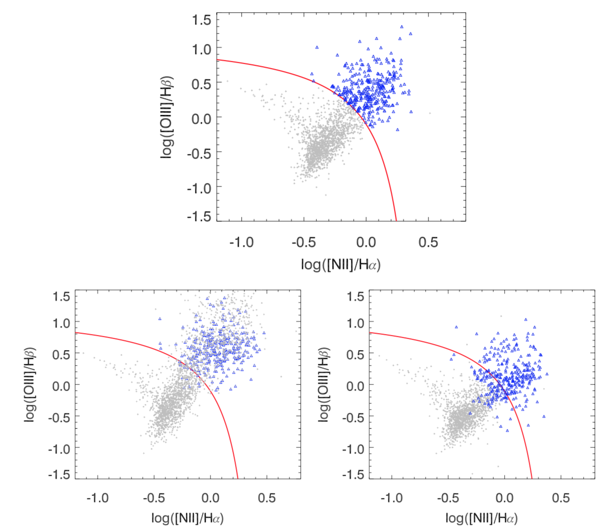
مقارنة بـ MILES، تستند قوالب BC03 إلى مكتبات نجمية تضم نجوما أقل وتغطي منطقة أصغر من فضاء المعلمات. وعند مقارنة BC03 SSPs مع MILES ومع SSPs نظرية بحتة (González Delgado et al., 2005)، تبين أن قوالب BC03 تمتلك خطوط امتصاص و أضحل، كما أشار González Delgado et al. (2005). لذلك تكون انبعاثات و صغيرة منهجيا أكثر من اللازم بعد طرح المجرة باستخدام BC03. ونتيجة لذلك، تُبالغ نسبتا [N II]/ و[O III]/ في التقدير، مما يعطي معدلات كشف AGN أعلى منهجيا.
وتبدو التباينات مع Thomas et al. (2013) أكثر إدهاشا في البداية لأن قوالب السكان النجميين المستخدمة مبنية أيضا على مكتبة MILES النجمية. غير أن Thomas et al. (2013) استخدم فقط القوالب ذات الفلزية الشمسية لتقليل زمن الحساب، مدعيا وجود تناظر في العمر والفلزية. ومع أن هذا التناظر صحيح عند ملاءمة الألوان وحدها، فإنه ينكسر عند ملاءمة المتصل وخطوط الامتصاص معا (مثلا، Reichardt, Jimenez, & Heavens, 2001). والغالبية الكبيرة من أفضل ملاءاتنا تكون بقوالب ذات فلزية أعلى من الشمسية. وخطوط الامتصاص في قوالب الفلزية الشمسية أعمق من نظيراتها في القوالب فائقة الفلزية الشمسية. لذلك نستنتج أن فيوض خطوط انبعاث و من Thomas et al. (2013) أكبر منهجيا من قيمها الصحيحة، وأن نسب خطوط BPT أدنى منهجيا.
4.4 اعتماد تحديد AGN على متطلبات S/N لخطوط الانبعاث
كما ذكرنا سابقا، تمتلك عينة SDSS الفرعية أعلى الأطياف جودة. وبعد التحقق من طريقتنا على عينة SDSS، يلزم أن نفهم كيف تتغير النتائج عند تطبيقها على أطياف أكثر ضجيجا. وكما رأينا سابقا في الشكل 2، فإن أطياف 6dF وFAST وCTIO لها S/N متصل أدنى عبر كامل مجال الأطوال الموجية مقارنة بأطياف SDSS. ويؤثر الضجيج الإضافي كذلك في القدرة على اكتشاف خطوط الانبعاث بثقة، ونرى في الشكل 10 أن عينات 6dF وFAST وCTIO الفرعية لها S/N أدنى لانبعاث الخطوط مقارنة بـ SDSS. ولكي يكون الفهرس متجانسا قدر الإمكان، نريد أن تكون كسور كشف AGN في العينات الفرعية الأربع متقاربة بقدر الإمكان. وبما أن SDSS تمتلك S/N أعلى في المتوسط، فإن اشتراط S/N نفسها في SDSS والعينات الفرعية الثلاث الأخرى سيؤدي بالضرورة إلى معدل كشف AGN أدنى للمجرات ذات أطياف 6dF وFAST وCTIO. ولحسن الحظ، تتداخل بصمة SDSS مع بصمة 6dF في الشرائط الثلاثة في نصف الكرة الجنوبي. ونستخدم 382 مجرة في 2MRS لها أطياف من كل من SDSS و6dF لتقييم أثر S/N للخطوط في معدل كشف AGN. ومن بينها، تمتلك 334 مجرة أطياف 6dF خارج مجال الانزياح الأحمر للتلوث التيلوري.
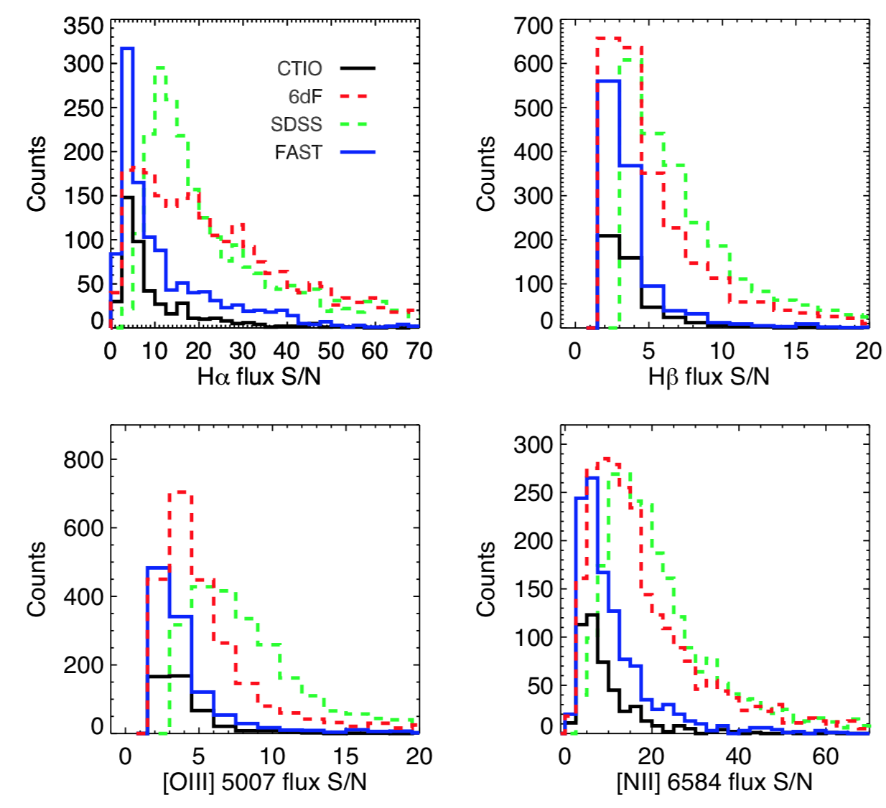
 3.0 لجميع الخطوط الأربعة، نخفض الشرط إلى S/N
3.0 لجميع الخطوط الأربعة، نخفض الشرط إلى S/N  2.0 لجميع الخطوط الأربعة في 6dF وFAST وCTIO لأن هذه العينات الفرعية ذات نسبة إشارة إلى ضجيج أدنى، كما نناقش في النص.
2.0 لجميع الخطوط الأربعة في 6dF وFAST وCTIO لأن هذه العينات الفرعية ذات نسبة إشارة إلى ضجيج أدنى، كما نناقش في النص.تؤثر نسبة الإشارة إلى الضجيج في كشف كل من AGNs من النمط 1 والنمط 2. ويعرض الشكل 11 مثالا لمجرة كُشفت فيها مركبة عريضة في طيف SDSS، لكنها لم تُكشف في طيف 6dF. وتمتلك AGNs عريضة الخطوط عادة انبعاثا قويا في الخطوط الضيقة أيضا؛ وعندما لا يكون الخط العريض واضحا، يمكن غالبا تحديدها بوصفها AGNs من خطوطها الضيقة. ونستخدم عينة المجرات ذات أطياف SDSS و6dF لدراسة الفروق في معدلات كشف AGN من النمط 2 الناتجة من S/N للخطوط.
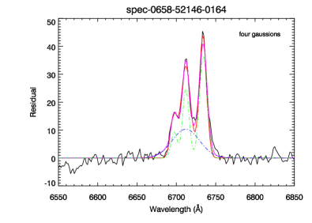
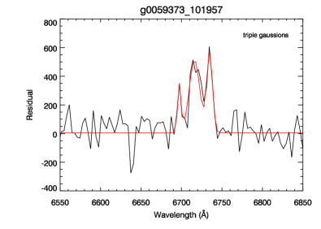
نحدد مدى الانخفاض اللازم في قطع S/N بحيث يُعرّف العدد نفسه من المجرات بوصفها AGNs من النمط 2 عند استخدام أطياف 6dF كما عند استخدام أطياف SDSS. ونجد أن خفض قطع S/N في 6dF إلى 1.20 لجميع الخطوط الأربعة يعطي الكسر نفسه من AGNs المكتشفة من النمط 2 التي تستوفي معايير Kewley et al. (2001). غير أننا عندما نرسم هذه المجرات، التي لها أطياف من كل من SDSS و6dF، على مخطط BPT، نجد أن نسب [N II]- الملائمة من أطياف 6dF أعلى منهجيا من تلك المستخرجة من أطياف SDSS، كما في اللوحة اليسرى من الشكل 12. وهذا يشير إلى أن قطعا منخفضا إلى هذا الحد في S/N لأطياف 6dF لا يعطي نتائج موثوقة.
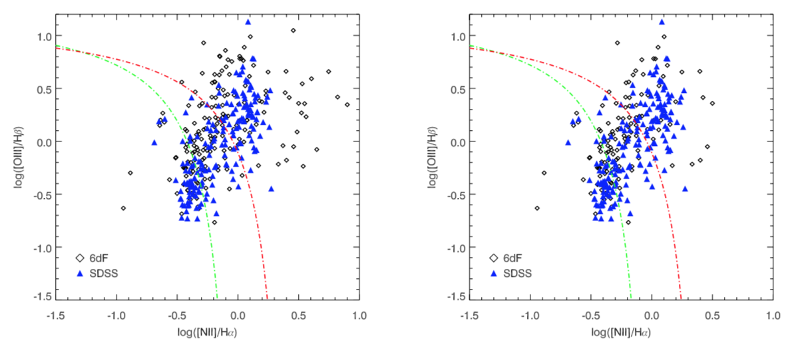
 3.0 (SDSS) وS/N
3.0 (SDSS) وS/N  1.2 (6dF) لجميع خطوط التشخيص الضيقة الأربعة لـ AGN. وقد ضُبطت قطوع S/N لإعطاء كسور AGN نفسها في العينتين. وتكون نسبة log([N II]/) أعلى منهجيا في قياسات 6dF. يمين: الرسم نفسه، لكن مع اشتراط أن تمتلك أطياف 6dF قيمة S/N
1.2 (6dF) لجميع خطوط التشخيص الضيقة الأربعة لـ AGN. وقد ضُبطت قطوع S/N لإعطاء كسور AGN نفسها في العينتين. وتكون نسبة log([N II]/) أعلى منهجيا في قياسات 6dF. يمين: الرسم نفسه، لكن مع اشتراط أن تمتلك أطياف 6dF قيمة S/N  2.0 لجميع الخطوط الأربعة. وتنخفض الفروق المنهجية بين SDSS و6dF إلى حد كبير.
2.0 لجميع الخطوط الأربعة. وتنخفض الفروق المنهجية بين SDSS و6dF إلى حد كبير.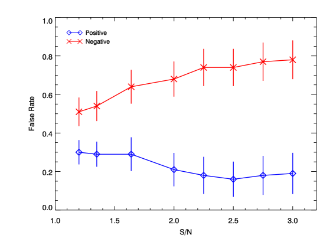
ينطوي اختيار قطع S/N الأمثل بالضرورة على مفاضلة بين النقاوة، أي تقليل الإيجابيات الكاذبة، والاكتمال، أي تقليل السلبيات الكاذبة. ولإيجاد التوازن الصحيح نبدأ بقيمة S/N في 6dF مقدارها 1.2 ونرفعها بزيادات صغيرة. وفي كل خطوة، نحسب معدل الإيجابيات الكاذبة، المعرف بأنه عدد AGNs (النمط 1+النمط 2) المحددة باستخدام أطياف 6dF لا أطياف SDSS مقسوما على عدد AGNs المحددة من أطياف 6dF، ومعدل السلبيات الكاذبة، المعرف بأنه عدد AGNs (النمط 1+النمط 2) المحددة باستخدام أطياف SDSS لا أطياف 6dF مقسوما على عدد AGNs المحددة من أطياف SDSS. وتعرض النتائج في الشكل 13. ونختار متطلب S/N  2.0 لجميع الخطوط الضيقة الأربعة في أطياف 6dF بوصفه نقطة معقولة في المفاضلة بين الإيجابيات الكاذبة والسلبيات الكاذبة. وتعرض اللوحة اليمنى من الشكل 12 مخطط BPT لـ AGNs ذات S/N
2.0 لجميع الخطوط الضيقة الأربعة في أطياف 6dF بوصفه نقطة معقولة في المفاضلة بين الإيجابيات الكاذبة والسلبيات الكاذبة. وتعرض اللوحة اليمنى من الشكل 12 مخطط BPT لـ AGNs ذات S/N  2.0 لجميع الخطوط الأربعة في أطياف 6dF، مقارنة بـ AGNs ذات S/N
2.0 لجميع الخطوط الأربعة في أطياف 6dF، مقارنة بـ AGNs ذات S/N  3.0 عند استخدام أطياف SDSS. وتنخفض الأخطاء المنهجية في نسبة خط 6dF [N II]/ انخفاضا كبيرا مقارنة بالحالة التي لم يُشترط فيها لأطياف 6dF سوى S/N
3.0 عند استخدام أطياف SDSS. وتنخفض الأخطاء المنهجية في نسبة خط 6dF [N II]/ انخفاضا كبيرا مقارنة بالحالة التي لم يُشترط فيها لأطياف 6dF سوى S/N  1.2.
1.2.
وباستخدام قطع S/N  2.0، نفحص كذلك AGNs المحددة من أطياف 6dF لا من أطياف SDSS. ونرسم نسب الخطوط من أطياف 6dF وSDSS لهذه المجرات في الشكل 14، فنجد أن معظمها يقع في الحقيقة فوق خط Kewley et al. (2001) في المخطط، لكنها لم تمتلك S/N
2.0، نفحص كذلك AGNs المحددة من أطياف 6dF لا من أطياف SDSS. ونرسم نسب الخطوط من أطياف 6dF وSDSS لهذه المجرات في الشكل 14، فنجد أن معظمها يقع في الحقيقة فوق خط Kewley et al. (2001) في المخطط، لكنها لم تمتلك S/N  3.0 لجميع الخطوط الأربعة في أطياف SDSS. ولا يقع إلا ثلاثة من أصل اثني عشر أدنى بكثير من خط Kauffmann et al. (2003). ويشير ذلك إلى أن بضع نسب مئوية فقط من AGNs المحددة من أطياف 6dF بقطع S/N الأدنى لن تُحدد كذلك من طيف أعلى جودة. وبما أن عينتي FAST وCTIO لهما S/N مشابهة لـ 6dF، فإننا نعتمد متطلب S/N
3.0 لجميع الخطوط الأربعة في أطياف SDSS. ولا يقع إلا ثلاثة من أصل اثني عشر أدنى بكثير من خط Kauffmann et al. (2003). ويشير ذلك إلى أن بضع نسب مئوية فقط من AGNs المحددة من أطياف 6dF بقطع S/N الأدنى لن تُحدد كذلك من طيف أعلى جودة. وبما أن عينتي FAST وCTIO لهما S/N مشابهة لـ 6dF، فإننا نعتمد متطلب S/N  2.0 لجميع الخطوط الضيقة الأربعة في هاتين العينتين الفرعيتين أيضا. كما نخفض قطع S/N لـ العريض في 6dF وFAST وCTIO إلى 2.0.
2.0 لجميع الخطوط الضيقة الأربعة في هاتين العينتين الفرعيتين أيضا. كما نخفض قطع S/N لـ العريض في 6dF وFAST وCTIO إلى 2.0.
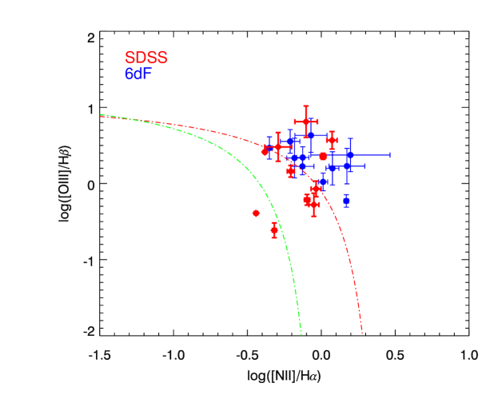
 2.0 لجميع الخطوط الأربعة)، لا من أطياف SDSS (مع S/N
2.0 لجميع الخطوط الأربعة)، لا من أطياف SDSS (مع S/N  3.0 لجميع الخطوط الأربعة)، للمجرات التي تمتلك أطياف 6dF وSDSS معا. اثنتان فقط من إحدى عشرة مجرة ليستا AGNs بوضوح، وأخرى ليست مجرة ذات خطوط انبعاثية وفق طيف SDSS الخاص بها. أما المجرات التي تقع نسب خطوطها فوق خط Kewley et al. (2001) باستخدام أطياف SDSS الخاصة بها فلا تجتاز قطع S/N في SDSS. وإجمالا توجد 56 AGNs محددة من أطياف 6dF. وهذا يشير إلى أن معدل الخطأ في AGNs المحددة من أطياف 6dF لا يتجاوز
3.0 لجميع الخطوط الأربعة)، للمجرات التي تمتلك أطياف 6dF وSDSS معا. اثنتان فقط من إحدى عشرة مجرة ليستا AGNs بوضوح، وأخرى ليست مجرة ذات خطوط انبعاثية وفق طيف SDSS الخاص بها. أما المجرات التي تقع نسب خطوطها فوق خط Kewley et al. (2001) باستخدام أطياف SDSS الخاصة بها فلا تجتاز قطع S/N في SDSS. وإجمالا توجد 56 AGNs محددة من أطياف 6dF. وهذا يشير إلى أن معدل الخطأ في AGNs المحددة من أطياف 6dF لا يتجاوز  5%.
5%.5 الفهرس
أنشأنا فهرس AGN من العينة الأم 2MRS باستخدام الخطوط البصرية. ويتكون فهرس AGN لدينا من 1929 AGNs عريضة الخطوط، و3607 AGNs ضيقة الخطوط تستوفي معايير Kewley et al. (2001)، و6562 AGNs ضيقة الخطوط تستوفي معايير Kauffmann et al. (2003). ويرد تفصيل AGNs في كل عينة فرعية طيفية، والكسور المقابلة لـ AGN، في الجدول 2. ومقامات هذه الكسور هي أعداد المجرات في العينة الفرعية المعنية التي عولجت (أي الخالية من التلوث التيلوري والواقعة خارج المستوى المجري). وينتج اللاتجانس في كسور AGN هذه من الفروق في الجودة الطيفية بين العينات الفرعية، كما نناقش بمزيد من التفصيل في القسم 6.
| Type 1 | Type 2 K01 | Type 2 K03 | |
|---|---|---|---|
| 6dF | 877 (8.470.30%) | 1088 (10.510.33%) | 2495 (24.090.54%) |
| SDSS | 811 (11.470.43%) | 1511 (21.380.61%) | 2455 (34.730.81%) |
| FAST | 137 (2.180.19%) | 714 (11.390.45%) | 1145 (18.260.59%) |
| CTIO | 104 (3.650.36%) | 294 (10.310.63%) | 467 (16.380.82%) |
| Total | 1929 (7.270.17%) | 3607 (13.590.24%) | 6562 (24.720.34%) |
-
•
يبين الجدول عدد AGNs في كل عينة فرعية، وكذلك كسر AGN وخطأ هذا الكسر نسبة إلى عدد الأطياف في عينتنا النهائية، للنمط 1 (عريض الخطوط)، والنمط 2 (ضيق الخطوط) وفق معايير Kewley et al. (2001) (K01)، والنمط 2 وفق معايير Kauffmann et al. (2003) (K03). ولا تكون كسور AGN متساوية بين العينات الفرعية المختلفة بسبب الفروق في S/N والدقة الطيفية وأخذ العينات الطيفي في كل عينة فرعية. وكما هو متوقع، تمتلك عينة SDSS أعلى كسور AGN. وبالنسبة إلى AGN من النمط 1، تمتلك 6dF ثاني أعلى كسر، وتمتلك FAST وCTIO كسورا متشابهة، في حين تمتلك العينات الثلاث كسورا متشابهة لـ AGN من النمط 2. وتعود التباينات في كسور AGN من النمط 1 بين 6dF وFAST وCTIO إلى الدقة الطيفية، كما نوقش في القسم 6.1 وكما يبين الشكل 18.
يعرض الشكلان 15 و 16، على الترتيب، توزيع AGNs في فهرسنا عبر السماء ومخططات BPT للمجرات ذات خطوط الانبعاث في كل من العينات الفرعية الأربع. وكما هو متوقع، نرى AGNs أكثر في منطقتي SDSS و6dF مقارنة بالمناطق التي لا تغطيها إلا FAST. وتُظهر مخططات BPT تشتتا أكبر لمجرات 6dF وFAST وCTIO بسبب قطع S/N الأدنى للخطوط.
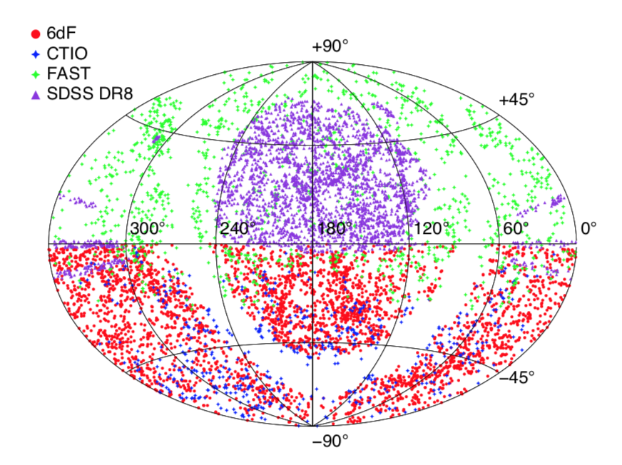
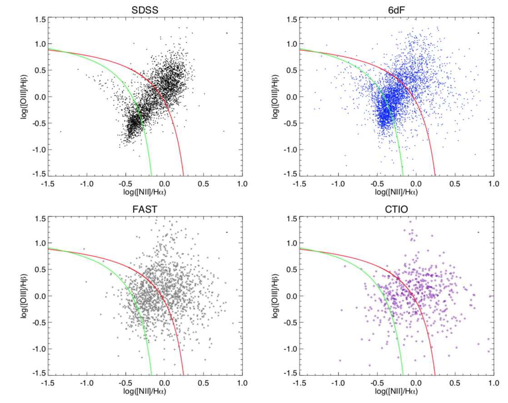
 2.0 لجميع الخطوط الأربعة إذا كانت من 6dF أو FAST أو CTIO) في كل عينة فرعية. وتشير الخطوط الخضراء والحمراء إلى معايير Kauffmann et al. (2003) وKewley et al. (2001) لـ AGNs ضيقة الخطوط، على الترتيب.
2.0 لجميع الخطوط الأربعة إذا كانت من 6dF أو FAST أو CTIO) في كل عينة فرعية. وتشير الخطوط الخضراء والحمراء إلى معايير Kauffmann et al. (2003) وKewley et al. (2001) لـ AGNs ضيقة الخطوط، على الترتيب.بالنسبة إلى AGNs من النمط 2 في فهرسنا، نفرق كذلك بين Seyferts ومناطق الخطوط الانبعاثية النووية منخفضة التأين (LINERs) باستخدام معايير Kewley et al. (2006). وتُعرض Seyferts وLINERs في كل عينة فرعية في الشكل 17. وعلى الرغم من أن LINERs أكثر عددا من Seyferts في كل عينة فرعية، فإن SDSS، ذات أعلى S/N، تمتلك أعلى نسبة LINER إلى Seyfert. ونستنتج أن السبب هو أن LINERs لها خطوط انبعاث أضعف، ومن ثم تُفقد تفضيليا في الأطياف ذات S/N الأدنى. ولاختبار هذه الفرضية، حددنا نسب LINER إلى Seyfert عند متطلبات S/N مختلفة، ووجدنا، كما هو متوقع، أن النسبة تنخفض عندما يُشترط أن تكون S/N أعلى. ونلاحظ أننا نستخدم مخطط BPT لـ [O III]/ مقابل [N II]/ لتحديد AGNs، لذلك تظهر بعض المجرات ذات خطوط الانبعاث التي لا تؤهل بوصفها AGNs في المخطط الرئيسي داخل منطقة AGN في مخطط [O III]/ مقابل [SII]/ .
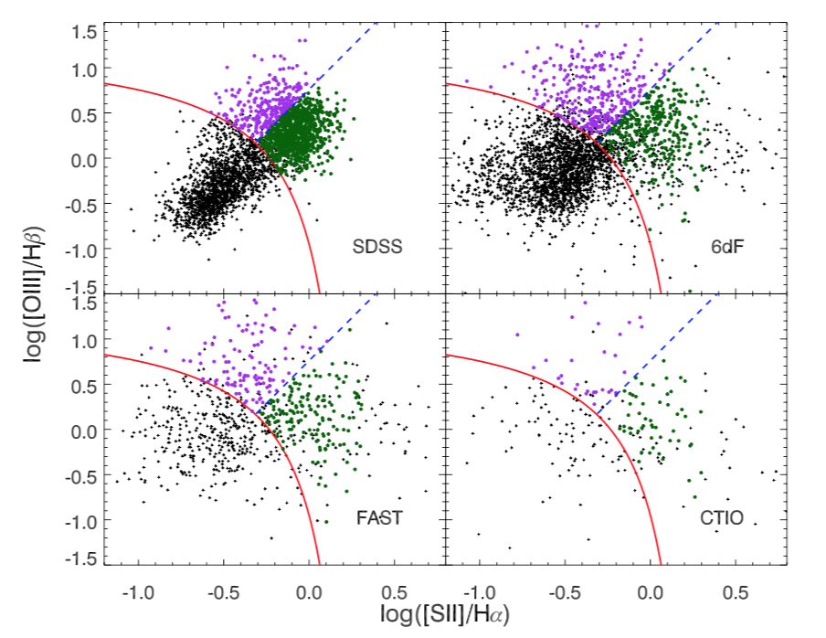
تُوصف تفاصيل طريقة تحديد AGN في القسم 3. ونعيد هنا ذكر معايير الانتقاء تيسيرا. نشترط أن تحقق المجرة المتطلبات الآتية حتى تُصنف بوصفها AGN:
-
•
طيف من SDSS أو 6dF أو FAST أو CTIO،
-
•
ألا يكون الطيف مصابا بتلوث تيلوري (تُستبعد المجرات في المجال من عينات 6dF وFAST وCTIO الفرعية)33 3 توجد 39 مجرات في مجال الانزياح الأحمر الملوث تيلوريا تُظهر انبعاث عريضا أعرض من التلوث التيلوري. ندرجها في فهرسنا بوصفها AGNs من النمط 1.،
-
•
أن تكون المجرة خارج المستوى المجري ()،
-
•
أن تكون
 المختزلة من ملاءمة SSP أصغر من 2.55 و6.05 و3.75 و7.15، لـ SDSS و6dF وFAST وCTIO، على الترتيب، مع الاحتفاظ بـ 99% من العينات الفرعية،
المختزلة من ملاءمة SSP أصغر من 2.55 و6.05 و3.75 و7.15، لـ SDSS و6dF وFAST وCTIO، على الترتيب، مع الاحتفاظ بـ 99% من العينات الفرعية، -
•
AGNs عريضة الخطوط (النمط 1):
-
–
S/N لـ العريض
 3.0 في SDSS، و
3.0 في SDSS، و 2.0 في 6dF وFAST وCTIO،
2.0 في 6dF وFAST وCTIO، -
–
FWHM لـ
 1000 km/s.44
4
توجد 5 مجرات تُظهر FWHM لـ
1000 km/s.44
4
توجد 5 مجرات تُظهر FWHM لـ  1000 km/s لكنها لا تظهر عريضا. ندرجها في فهرسنا بوصفها AGNs من النمط 1.
1000 km/s لكنها لا تظهر عريضا. ندرجها في فهرسنا بوصفها AGNs من النمط 1.
-
–
-
•
AGNs ضيقة الخطوط (النمط 2):
-
–
أن تكون جميع الخطوط الضيقة الأربعة ذات S/N في SDSS، و
 2.0 في العينات الفرعية الأخرى،
2.0 في العينات الفرعية الأخرى، -
–
أن تستوفي نسب الخطوط معايير Kauffmann et al. (2003).
-
–
وتُعلم AGNs التي تستوفي معايير Kewley et al. (2001) الأكثر صرامة على هذا النحو، وتشكل مجموعة فرعية من الفهرس.
تُعرض عينة من الفهرس في الجدول 3. ونقدم الخصائص الآتية لـ AGNs:
-
•
TMID: معرف 2MASS ID، وهو توليفة من RA وDec بوحدات ستينية.
-
•
RA: المطلع المستقيم بالدرجات.
-
•
DEC: الميل بالدرجات.
-
•
V: السرعة بوحدة km/s، في إطار مرجعي مركزي الشمس، أي مصححة لحركة الأرض حول الشمس.
-
•
CAT: المصدر الطيفي، 6=6dF، وS=SDSS، وF=FAST، وC=CTIO.
- •
-
•
S/N (4660-4810Å): نسبة الإشارة إلى الضجيج للطيف قرب خط . وبما أن هو أضعف خطوط تحديد AGN الأربعة، فهذه هي قيمة جودة الطيف التي تؤثر في القدرة على كشف خطوط الانبعاث الضيقة لتحديد AGN من النمط 2.
-
•
S/N (6350-6540Å): نسبة الإشارة إلى الضجيج للطيف قرب خط ، وهي قيمة جودة الطيف التي تؤثر في القدرة على كشف خط العريض لتحديد AGN من النمط 1.
-
•
 : القدر المتساوي السطوع المصحح للانطفاء؛ ويمكن استخدامه لبناء عينة أم محدودة الحجم من المجرات.
: القدر المتساوي السطوع المصحح للانطفاء؛ ويمكن استخدامه لبناء عينة أم محدودة الحجم من المجرات. -
•
SSP
 : قيمة
: قيمة  المختزلة من ملاءمة SSP.
المختزلة من ملاءمة SSP.
| TMID | RA (deg) | DEC (deg) | V (km/s) | CAT | Type | S/N | S/N | SSP | |
|---|---|---|---|---|---|---|---|---|---|
| (4660-4810Å) | (6350-6540Å) | ||||||||
| 00001131-0509313 | 0.04709 | -5.15876 | 5713 | 6 | K03 | 13.61 | 17.96 | 11.65 | 1.26 |
| 00001825-4729226 | 0.07596 | -47.48958 | 8191 | 6 | K01 | 24.90 | 31.86 | 11.61 | 0.99 |
| 00003564-0145472 | 0.14849 | -1.76318 | 7322 | 6 | K03 | 20.87 | 30.10 | 11.48 | 1.569 |
| 00011378-4400426 | 0.3074 | -44.01183 | 11681 | 6 | K03 | 19.17 | 20.76 | 11.30 | 0.92 |
| 00012334+4733537 | 0.34737 | 47.56496 | 5237 | F | K01 | 8.38 | 12.84 | 11.67 | 1.37 |
| 00013605-1444548 | 0.4002 | -14.74867 | 11296 | 6 | K01 | 23.96 | 37.78 | 11.23 | 1.14 |
| 00015583-2737382 | 0.48258 | -27.62723 | 8493 | 6 | K01 | 14.25 | 25.54 | 10.32 | 2.07 |
| 00020386-3328023 | 0.51617 | -33.46728 | 8675 | 6 | K03 | 35.16 | 45.13 | 11.24 | 1.37 |
| 00023480-0342386 | 0.64505 | -3.71072 | 6445 | 6 | T1 | 22.43 | 39.86 | 10.98 | 1.84 |
| 00024429-5344549 | 0.6845 | -53.74858 | 10459 | 6 | K01 | 28.08 | 37.27 | 11.54 | 1.03 |
| 00024517-3213361 | 0.68832 | -32.22675 | 8041 | 6 | K03 | 24.81 | 32.28 | 11.734 | 0.75 |
| 00024862-0336216 | 0.70269 | -3.60602 | 6232 | 6 | T1 | 16.61 | 26.91 | 11.71 | 1.25 |
| 00031064-5444562 | 0.79429 | -54.74892 | 9767 | C | K01 | 34.38 | 46.37 | 10.34 | 1.65 |
| 00031127+1557563 | 0.79697 | 15.96568 | 11218 | S | K01 | 38.50 | 54.41 | 10.65 | 1.09 |
| 00031764+7028152 | 0.82361 | 70.47093 | 7266 | F | K03 | 1.97 | 6.02 | 11.38 | 1.26 |
| 06501743-3805136* | 102.57276 | -38.0871 | 9008 | C | T1 | 11.94 | 13.70 | 11.02 | 1.53 |
| 07432627-6146185* | 115.85938 | -61.77181 | 10453 | C | K03 | 20.51 | 28.02 | 10.79 | 1.19 |
| 09153810-8646005*# | 138.90889 | -86.76678 | 5081 | C | K01 | 28.45 | 44.70 | 9.88 | 8.84 |
| 09302571-6502042* | 142.607 | -65.03441 | 6244 | C | K01 | 10.92 | 17.37 | 11.15 | 1.72 |
| 17485834-0203109* | 267.24316 | -2.05299 | 8492 | F | K01 | 9.27 | 17.77 | 11.06 | 2.58 |
-
•
TMID: معرف Two MASS ID، وتشير * إلى أن الطيف لم يكن له طيف خطأ مرافق، وتشير # إلى أن “الملاءمة المحلية“ استخدمت لتقدير مساهمة المجرة؛ RA: المطلع المستقيم؛ DEC: الميل؛ V: السرعة؛ CAT: المصدر الطيفي، 6=6dF، وS=SDSS، وF=FAST، وC=CTIO؛ Type: نوع AGN، T1=النمط 1، وK01=النمط 2 وفق معايير Kewley et al. (2001)، وK03 = النمط 2 وفق معايير Kauffmann et al. (2003)؛ S/N (4660-4810Å): نسبة الإشارة إلى الضجيج للطيف قرب خط ؛ S/N (6350-6540Å): نسبة الإشارة إلى الضجيج للطيف قرب خط ؛
 : القدر المتساوي السطوع
: القدر المتساوي السطوع  المصحح للانطفاء؛ SSP
المصحح للانطفاء؛ SSP  : قيمة
: قيمة  المختزلة من ملاءمة SSP. ينشر الجدول 3 كاملا في الطبعة الإلكترونية من مجلة Astrophysical Journal. ويُعرض هنا جزء منه للإرشاد بشأن شكله ومحتواه. ويتضمن الجدول الكامل أيضا عروض خطوط الانبعاث وفيوضها وأخطاء الفيض لجميع AGNs في الفهرس.
المختزلة من ملاءمة SSP. ينشر الجدول 3 كاملا في الطبعة الإلكترونية من مجلة Astrophysical Journal. ويُعرض هنا جزء منه للإرشاد بشأن شكله ومحتواه. ويتضمن الجدول الكامل أيضا عروض خطوط الانبعاث وفيوضها وأخطاء الفيض لجميع AGNs في الفهرس.
نقدم أيضا فهرس AGN موسعا يتضمن FWHM وS/N لخط العريض المستخدم لتحديد AGNs من النمط 1، وفيوض الخطوط الضيقة الأربعة المستخدمة في تحديد AGNs من النمط 2 وأخطاء فيوضها وS/N الخاصة بها. وإضافة إلى ذلك، نقدم فهرسا منفصلا لـ “المجرات ذات خطوط الانبعاث”، حيث تكون الخطوط الضيقة الأربعة المستخدمة في تحديد AGN من النمط 2 مكتشفة كلها مع S/N  1.0. وبالنسبة إلى فهرس المجرات ذات خطوط الانبعاث، ندرج TMID وRA وDec والسرعة والمصدر الطيفي والقدر المتساوي السطوع
1.0. وبالنسبة إلى فهرس المجرات ذات خطوط الانبعاث، ندرج TMID وRA وDec والسرعة والمصدر الطيفي والقدر المتساوي السطوع  ، وS/N للطيف قرب خط ، وقيمة
، وS/N للطيف قرب خط ، وقيمة  المختزلة من SSP، وفيوض الخطوط الضيقة الأربعة وأخطاء فيوضها وS/N الخاصة بها.
المختزلة من SSP، وفيوض الخطوط الضيقة الأربعة وأخطاء فيوضها وS/N الخاصة بها.
تتيح قياسات الخطوط التي نقدمها للمستخدم بناء فهرس AGN مخصص باستخدام معايير انتقاء AGN مختلفة.لاحظ أن أطياف SDSS وحدها تمتلك معايرة مطلقة للفيض. ولا يمكن استخدام الفيوض المقدمة لـ 6dF وFAST وCTIO إلا كنسب، لا كقياسات فيض فعلية.
6 معدلات كشف AGN
ناقشنا في القسم 4.4 خفض متطلب S/N للخطوط في أطياف 6dF وFAST وCTIO مقارنة بأطياف SDSS من أجل تقريب معدلات كشف AGN بعضها من بعض. وللأسف، لا يمكننا خفضه حتى تتساوى المعدلات، لأن ذلك يدخل عددا كبيرا من التحديدات الإيجابية الكاذبة لـ AGN ونسب [N II]- أعلى منهجيا. ونتيجة لذلك، يكون معدل كشف AGN أدنى في عينات 6dF وFAST وCTIO الفرعية مقارنة بعينة SDSS الفرعية، كما يظهر في الجدول 2. وندرس في هذا القسم آثار S/N والدقة الطيفية في معدلات كشف AGN وفي نسب AGN من النمط 1 إلى النمط 2.
6.1 أثر الدقة الطيفية في نسبة AGN من النمط 1 إلى النمط 2
بالنسبة إلى AGNs من النمط 2، ولا سيما تلك التي تستوفي معايير Kewley et al. (2001)، تكون معدلات الكشف في عينات 6dF وFAST وCTIO الفرعية متشابهة، ونحو نصف معدل SDSS. أما معدلات كشف AGN من النمط 1 فتختلف كثيرا بين العينات الفرعية الثلاث ذات S/N الأدنى. ويعرض الشكل 18 نسب AGN من النمط 1 إلى النمط 2 للعينات الفرعية المختلفة. وتُعرض قيمة SDSS، وهي المرجع، بخط منقط55
5
نظرا إلى أن أطياف SDSS لها S/N أعلى، وأن لأطياف SDSS عرض حاوية طيفية يعتمد على الطول الموجي للحفاظ على نسبة لايقين الطول الموجي إلى الطول الموجي عبر الطيف، فإننا لا نرسم نسبة SDSS مقابل الدقة الطيفية مع العينات الأخرى.. ونجد أن نسبة النمط 1 إلى النمط 2 تزداد مع عرض الحاوية الطيفية، أي مع انخفاض الدقة، بين FAST وCTIO و6dF. وبما أن معدلات كشف النمط 2 متقاربة تقريبا في العينات الفرعية الثلاث، فإن هذا الاتجاه تحركه معدلات كشف النمط 1. ويرجع ذلك إلى أن الحاويات الطيفية الأعرض تعمل فعليا كتنعيم طيفي، فتزيد S/N لانبعاث العريض (لكن المنخفض)، الذي يمكن أن يبلغ عرضه عشرات Å. وفي مجال الأطوال الموجية لـ و[N II]، تمتلك 6dF دقة طيفية أسوأ من SDSS بمقدار  3-4 مرات. وبالتالي، رغم أن معدل كشف كل من AGNs من النمط 1 والنمط 2 أدنى في 6dF مقارنة بـ SDSS، فإن AGNs من النمط 2 تُفقد تفضيليا بمعدل أعلى بكثير. وهذا يؤدي إلى نسبة أعلى من Type1 إلى AGN من النمط 2 في عينة 6dF الفرعية.
3-4 مرات. وبالتالي، رغم أن معدل كشف كل من AGNs من النمط 1 والنمط 2 أدنى في 6dF مقارنة بـ SDSS، فإن AGNs من النمط 2 تُفقد تفضيليا بمعدل أعلى بكثير. وهذا يؤدي إلى نسبة أعلى من Type1 إلى AGN من النمط 2 في عينة 6dF الفرعية.
 3-4 مرات. وبالتالي، رغم أن معدل كشف كل من AGNs من النمط 1 والنمط 2 أدنى في 6dF مقارنة بـ SDSS، فإن AGNs من النمط 2 تُفقد تفضيليا بمعدل أعلى بكثير، مما يؤدي إلى نسبة أعلى بين النمط 1 والنمط 2 في عينة 6dF الفرعية.
3-4 مرات. وبالتالي، رغم أن معدل كشف كل من AGNs من النمط 1 والنمط 2 أدنى في 6dF مقارنة بـ SDSS، فإن AGNs من النمط 2 تُفقد تفضيليا بمعدل أعلى بكثير، مما يؤدي إلى نسبة أعلى بين النمط 1 والنمط 2 في عينة 6dF الفرعية.6.2 أثر S/N الطيفية في معدلات كشف AGN
نظرا إلى أن تحديد AGN يعتمد على عروض خطوط الانبعاث ونسبها، فإن S/N للخطوط الطيفية يؤثر في معدلات الكشف. ويبين تحليل إضافي أن هذه الفروق تعود إلى S/N المتصل الكلية في الطيف. فبينما تتحدد S/N للخط بمزيج من الجودة الطيفية وقوة خط الانبعاث في الطيف، فإن S/N المتصل لا تعتمد على انبعاث الخط. وتمثل S/N المتصل مقياسا للضجيج عند طول موجي معين وللقدرة على كشف خط عند ذلك الطول الموجي. ويعرض العمود الأيسر من الشكل 19 معدل كشف AGN مقابل S/N المتصل، من الأعلى إلى الأسفل، لـ AGNs من النمط 1، وAGNs من النمط 2 التي تستوفي معايير Kewley et al. (2001)، وAGNs من النمط 2 التي تستوفي معايير Kauffmann et al. (2003). وبما أن S/N المتصل تعتمد على الطول الموجي، نختار تقييم S/N المتصل بين 6350 و6540 Å (قرب خط ) لـ AGNs من النمط 1. أما بالنسبة إلى AGNs من النمط 2، فنقيم S/N المتصل بين 4660 و4810 Å، أي قرب خط ، لأن أضعف الخطوط الأربعة المستخدمة في تحديد AGN من النمط 2.
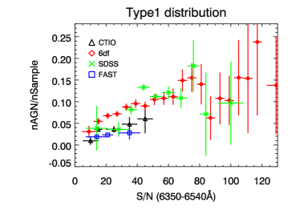
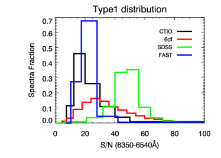
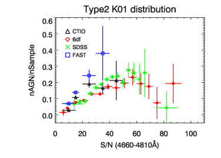
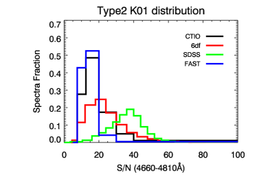
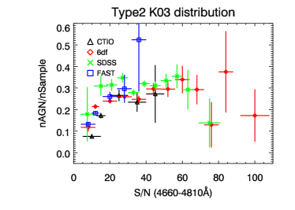
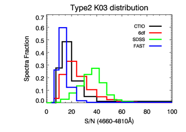
 50 لـ AGNs من النمط 2، وعند S/N
50 لـ AGNs من النمط 2، وعند S/N  75 لـ AGNs من النمط 1؛ وفوق هذه القيمة تكون كسور AGN في العينات الفرعية المختلفة متوافقة بعضها مع بعض. وتمتلك SDSS أعلى قيم S/N، تليها 6dF. أما FAST وCTIO فلهما توزيعات S/N متقاربة، ولا تمتلكان إلا عددا قليلا جدا من الأطياف ذات S/N 50.
75 لـ AGNs من النمط 1؛ وفوق هذه القيمة تكون كسور AGN في العينات الفرعية المختلفة متوافقة بعضها مع بعض. وتمتلك SDSS أعلى قيم S/N، تليها 6dF. أما FAST وCTIO فلهما توزيعات S/N متقاربة، ولا تمتلكان إلا عددا قليلا جدا من الأطياف ذات S/N 50.يزداد كسر كشف AGN مع S/N في جميع العينات الفرعية حتى نقطة تشبع في نسبة الإشارة إلى الضجيج، S/N (6350-6540 Å)  50 لـ AGNs من النمط 2، وS/N (4660-48109Å)
50 لـ AGNs من النمط 2، وS/N (4660-48109Å)  75 لـ AGNs من النمط 1، وعندها يستوي كسر AGN. إضافة إلى ذلك، تكون كسور كشف AGN في 6dF وSDSS متوافقة لقيم S/N الأعلى من قيمة التشبع. ولا تمتلك عينتا FAST وCTIO الفرعيتان بيانات كافية للتقييم، لكن سلوكهما يرجح أن يكون مشابها لـ 6dF. ويشير تشابه الاتجاه بين العينات الفرعية المختلفة ولأنواع AGN المختلفة إلى أن S/N الطيفية الكلية هي التي تحرك كسر كشف AGN. وإذا تغير قطع S/N للخطوط، تتحرك جميع المعدلات صعودا أو هبوطا، لكن شكل التوزيع يبقى كما هو.
75 لـ AGNs من النمط 1، وعندها يستوي كسر AGN. إضافة إلى ذلك، تكون كسور كشف AGN في 6dF وSDSS متوافقة لقيم S/N الأعلى من قيمة التشبع. ولا تمتلك عينتا FAST وCTIO الفرعيتان بيانات كافية للتقييم، لكن سلوكهما يرجح أن يكون مشابها لـ 6dF. ويشير تشابه الاتجاه بين العينات الفرعية المختلفة ولأنواع AGN المختلفة إلى أن S/N الطيفية الكلية هي التي تحرك كسر كشف AGN. وإذا تغير قطع S/N للخطوط، تتحرك جميع المعدلات صعودا أو هبوطا، لكن شكل التوزيع يبقى كما هو.
تعرض اللوحات اليمنى من الشكل 19 توزيع S/N المتصل للعينات الفرعية الأربع. وكما هو متوقع، تمتلك عينة SDSS أعلى S/N كلية، بينما تُظهر 6dF وFAST وCTIO توزيعات أكثر تشابها. ونتيجة لذلك، يحتوي فهرسنا على لاتجانسات بسبب الفروق في التغطية السماوية للعينات الفرعية. ويوضح الشكل 20 كسور AGN (عدد AGNs المحددة مقسوما على عدد المجرات في عينتنا الطيفية) في فهرسنا، عبر السماء (اللوحة اليسرى) وبحسب الانزياح الأحمر (اللوحة اليمنى). وفي كل بكسل في السماء وكل حاوية انزياح أحمر، يكون عدد AGNs هو مجموع عدد AGNs عريضة الخطوط وعدد AGNs ضيقة الخطوط التي تستوفي معايير Kauffmann et al. (2003). وبافتراض أن AGNs تتبع البنية واسعة النطاق التي تقع فيها، فينبغي أن تكون نسبة AGNs إلى المجرات متجانسة عبر السماء وفي الانزياح الأحمر. وفي نصف الكرة الجنوبي، حيث يقل عدد مجرات NED (وغيرها من المجرات المفقودة) وتهيمن 6dF على العينة المتاحة، نجد أن كسر AGN متجانس إلى حد معقول. ويتتبع الشريط الداكن المستوى المجري الذي لا ندرجه في عينتنا. أما في الشمال، فتبلغ النسبة أعلى قيمة داخل بصمة SDSS، كما هو متوقع نظرا إلى أن أطياف SDSS هي الأفضل بين العينات الفرعية، وتكون أدنى في المناطق الأخرى. ويكون الاكتمال بالنسبة إلى الانزياح الأحمر متجانسا إلى حد معقول، باستثناء منطقة  حيث تتلوث أطياف 6dF وFAST وCTIO بالخط التيلوري ولا تتوافر لدينا إلا عينة SDSS، وخارج مجال التلوث التيلوري، حيث تصبح 2MRS نفسها غير مكتملة إلى حد كبير بسبب متطلب القدر
حيث تتلوث أطياف 6dF وFAST وCTIO بالخط التيلوري ولا تتوافر لدينا إلا عينة SDSS، وخارج مجال التلوث التيلوري، حيث تصبح 2MRS نفسها غير مكتملة إلى حد كبير بسبب متطلب القدر  . وعلى الرغم من أن فهرس AGN لدينا يحتوي ككل على لاتجانسات مكانية ولاتجانسات في الانزياح الأحمر، نجد أن كسر AGN داخل كل عينة فرعية متجانس إلى حد معقول مكانيا وبحسب الانزياح الأحمر، كما يظهر في الشكلين 21 و 22.
. وعلى الرغم من أن فهرس AGN لدينا يحتوي ككل على لاتجانسات مكانية ولاتجانسات في الانزياح الأحمر، نجد أن كسر AGN داخل كل عينة فرعية متجانس إلى حد معقول مكانيا وبحسب الانزياح الأحمر، كما يظهر في الشكلين 21 و 22.
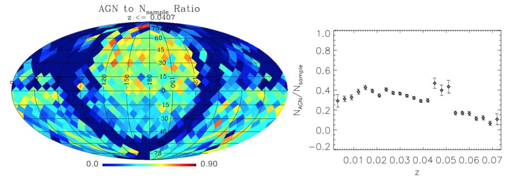
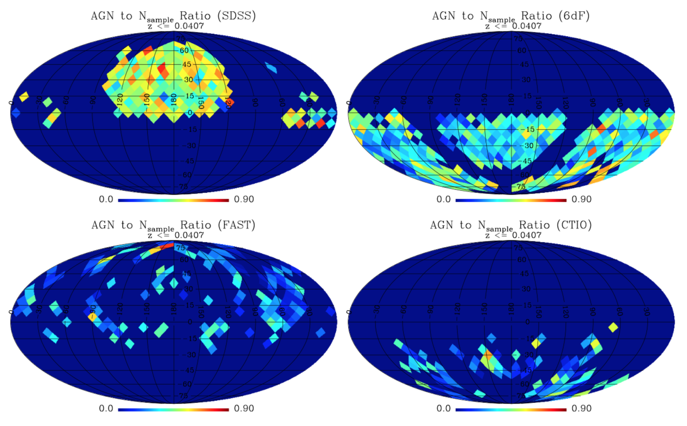
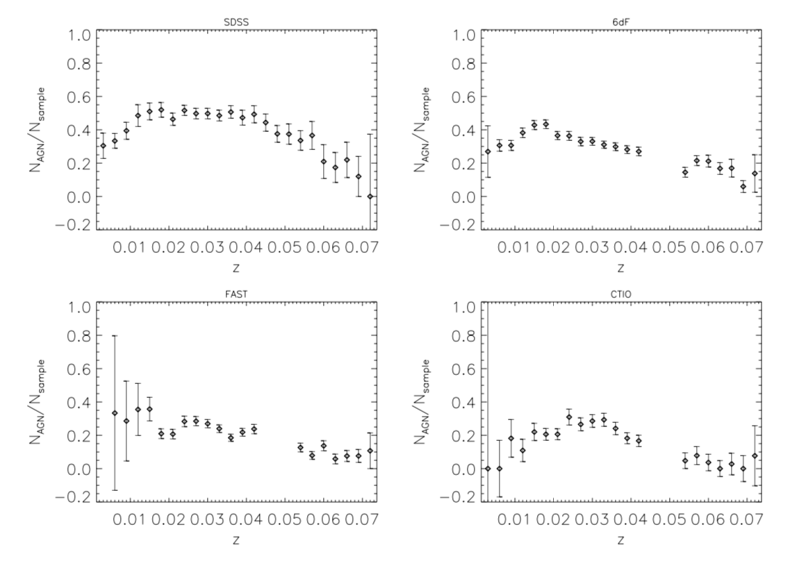
 بسبب التلوث التيلوري لمركب [N II]- .
بسبب التلوث التيلوري لمركب [N II]- .لا تؤثر الفروق في معدل كشف AGN الناتجة من جودة البيانات في الفهارس التي تستخدم بيانات غير متجانسة فحسب، بل تؤثر أيضا في التحليلات التي تقارن نتائج مسوح مختلفة. لذلك يجب أخذ هذه الآثار في الحسبان عند استخدام أي فهرس متاح علنا، بحسب أهداف التحليل. ويحتوي فهرسنا على لاتجانس وعدم اكتمال إضافيين بسبب الأطياف المفقودة أو الملوثة تيلوريا. ويظهر ذلك في الشكل 23، حيث نرسم نسبة عدد AGNs المحددة إلى عدد المجرات في فهرس 2MRS الأم، عبر السماء وبحسب الانزياح الأحمر. وفي القسم التالي نطور طريقة للتصحيح إحصائيا للاتجانس وعدم الاكتمال الناتجين من المجرات التي لا أطياف لها ومن المجرات ذات S/N طيفية غير كافية.
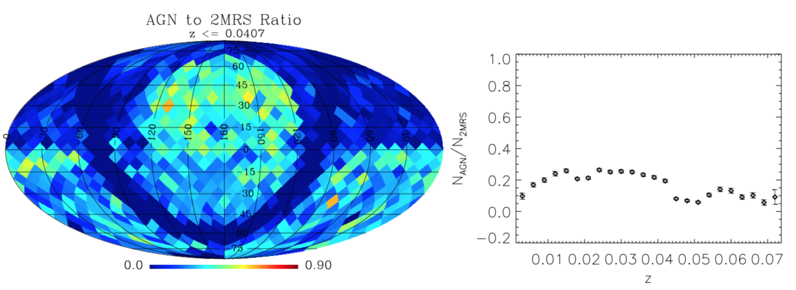
6.3 تصحيح إحصائي لعدم الاكتمال وعدم التجانس بسبب الجودة الطيفية
إذا كان هذا الفهرس سيستخدم في دراسة إحصائية، مثلا للارتباطات مع اتجاه وصول الأشعة الكونية، فيجب حساب عدم الاكتمال واللاتجانسات كي يمكن فهم النتائج فهما كاملا. نفترض أن اللاتجانس وعدم الاكتمال (نسبة إلى معدل التشبع) يرجعان أساسا إلى الأطياف ذات نسبة الإشارة إلى الضجيج (S/N) المنخفضة في المتصل. وكما يظهر في الشكل 19، يزداد كسر AGN مع S/N حتى قيمة تشبع يبقى بعدها الكسر ثابتا. وتظهر هذه الظاهرة النوعية في AGNs من النمط 1 والنمط 2، مع كل من معايير Kewley et al. (2001) وKauffmann et al. (2003)، لجميع العينات الفرعية. وفوق ذلك، بعد نقطة التشبع تمتلك جميع العينات الفرعية كسور AGN متوافقة ضمن الخطأ. نستعيد إحصائيا AGNs التي كانت ستُعرف لو أن أطيافها كانت ذات جودة كافية على النحو الآتي:
نمثّل كسر AGN بوصفه دالة في S/N المتصل باستخدام ملاءمة خطية دون قيمة S/N التشبع، وثابت فوقها، لـ AGNs من النمط 1 وAGNs من النمط 2 التي تستوفي معايير Kewley et al. (2001).66 6 نستخدم معايير Kewley et al. (2001) في هذا التحليل لأنها تعطي عينة أنقى من المجرات ذات نشاط AGN. كما أن كسر AGN لـ AGNs من النمط 2 التي تستوفي معايير Kauffmann et al. (2003) يبدو أنه يتبع منحنى لا خطا ويتطلب تحليلا أكثر تعقيدا. وبفعل ذلك نحصل على العلاقات الآتية:
حيث إن () هي نسبة الإشارة إلى الضجيج في المتصل عند الأطوال الموجية 6350-6540 Å (4660-4810 Å)، أي قرب خط ()، و () هو كسر AGN لقيمة S/N الخاصة بالمجرة المعطاة بالنسبة إلى AGNs من النمط 1 (النمط 2)، و () هي قيمة التشبع لكسر AGN من النمط 1 (النمط 2). وإذا كانت مجرة غير AGN تمتلك قيمة S/N (6350-6540 Å) فوق 76، نُسند إليها احتمالية AGN من النمط 1 تساوي صفرا. وبالمثل، إذا كانت لها قيمة S/N (4660-4810 Å) فوق 50، نُسند احتمالية AGN من النمط 2 تساوي صفرا. وإذا كانت قيم S/N للمجرة قرب خطي و أقل من قيم التشبع، نُسند الاحتمالات على النحو الآتي:
حيث إن و هما احتمالا أن تكون المجرة AGN من النمط 1 والنمط 2، على الترتيب. وبالنسبة إلى المجرات غير الموجودة في عينتنا الطيفية، نُسند كسور AGN التشبعية بوصفها احتمالات AGN الخاصة بها. واحتمال أن تكون المجرة AGN هو مجموع احتمالي AGN من النمط 1 والنمط 2. وتُسند إلى المجرات المعرفة بوصفها AGNs احتمالية AGN مقدارها 1.0. وترد أمثلة على إسناد الاحتمالات لغير AGNs وللمجرات ذات الأطياف المفقودة في الجدولين 4 و5، على الترتيب. تهدف هذه الاحتمالات إلى التصحيح إحصائيا لكل من اللاتجانس وعدم الاكتمال. وإذا استُخدمت معايير مختلفة لتحديد AGNs، مثل S/N مختلفة للخطوط، فينبغي تكرار هذا التحليل لتقييم عدم الاكتمال واللاتجانس.
يبين الشكل 24 عدد AGNs (النمط 1 والنمط 2 المستوفي معايير Kewley et al. (2001)) مقسوما على عدد المجرات في 2MRS، أي كسر AGN، عبر السماء (يسارا) وبالنسبة إلى الانزياح الأحمر (يمينا). في الرسوم العلوية يكون عدد AGNs ببساطة هو العدد الذي يجتاز معايير خطوط الانبعاث. وهذه AGNs المحددة غير متجانسة عبر السماء وفي الانزياح الأحمر. إضافة إلى ذلك، تقع النسب عبر السماء وفي الانزياح الأحمر دون قيمة التشبع، المضبوطة لتكون أقصى المجال المرسوم. وفي الرسوم السفلية، يعرّف عدد AGNs بأنه مجموع احتمالات AGN. وتكون نسبة AGNs “الإحصائية” هذه إلى عدد المجرات في 2MRS موحدة عبر السماء وفي الانزياح الأحمر. كما تقع النسب حول قيمة التشبع، الموجودة الآن في وسط المجال المرسوم. لذلك تعوض احتمالات AGN إحصائيا عن اللاتجانس وعدم الاكتمال في AGNs المحددة بسبب الجودة الطيفية، ويمكن استخدامها في الدراسات الإحصائية. كما يحدد التحليل المجرات التي يلزم توضيح حالة AGN فيها بتحليل طيفي أعلى جودة للحصول على فهرس AGN كامل ومتجانس.
تثبت هذه النتيجة صحة الافتراض بأن اللاتجانس وعدم الاكتمال تهيمن عليهما الجودة الطيفية. وفوق ذلك، تشير هذه النتائج إلى أنه لكي يكون الفهرس البصري كاملا، ينبغي أن تمتلك الأطياف S/N (6350-6540 Å)  76 وS/N (4660-4810 Å)
76 وS/N (4660-4810 Å)  50. ومتطلب S/N الأعلى للنمط 1 متسق مع كون الخطوط العريضة ذات قمم أدنى عادة من الخطوط الضيقة، ومن ثم أصعب تمييزا عن الضجيج.
50. ومتطلب S/N الأعلى للنمط 1 متسق مع كون الخطوط العريضة ذات قمم أدنى عادة من الخطوط الضيقة، ومن ثم أصعب تمييزا عن الضجيج.
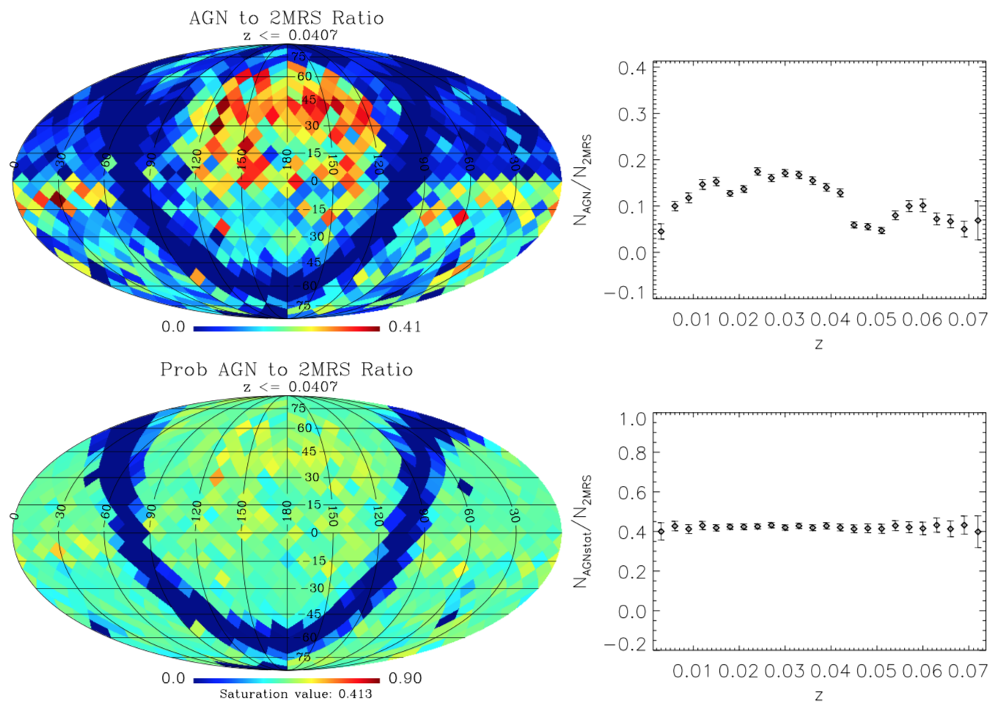
| TMID | RA (deg) | DEC (deg) | V (km/s) | CAT | TYPE | S/N | S/N | PROBT1 | PROBT2 | PROBAGN |
| (4660-4810Å) | (6350-6540Å) | |||||||||
| 00000865-0622263 | 0.03601 | -6.37399 | 6531 | 6 | Emi | 16.78 | 27.80 | 0.1356 | 0.1791 | 0.3147 |
| 00002363-4701076 | 0.09836 | -47.01881 | 5991 | 6 | – | 24.10 | 53.66 | 0.0708 | 0.1573 | 0.2281 |
| 00005858-3336429 | 0.24409 | -33.61195 | 6914 | 6 | Emi | 14.83 | 19.13 | 0.1546 | 0.1832 | 0.3378 |
| 00010289-4319496 | 0.26204 | -43.33044 | 11627 | 6 | – | 22.78 | 38.48 | 0.1126 | 0.1565 | 0.2691 |
| 00010597-5359303 | 0.27494 | -53.99181 | 9423 | C | Emi | 20.32 | 28.78 | 0.1358 | 0.1636 | 0.2994 |
| 00011748-5300348 | 0.32276 | -53.00967 | 9724 | 6 | Emi | 12.91 | 18.80 | 0.1538 | 0.1911 | 0.3450 |
| 00013295-0726099 | 0.38729 | -7.43614 | 8836 | 6 | Emi | 26.41 | 40.53 | 0.1094 | 0.1394 | 0.2488 |
| 00014077+5344492 | 0.41976 | 53.747 | 10813 | F | – | 15.46 | 24.71 | 0.1421 | 0.1833 | 0.3254 |
| 00015102-6911394 | 0.46241 | -69.19435 | 18236 | 6 | – | 17.38 | 20.91 | 0.1525 | 0.1730 | 0.3256 |
| 00020544-3037082 | 0.52273 | -30.61901 | 9063 | 6 | – | 20.02 | 30.24 | 0.1320 | 0.1657 | 0.2976 |
| 00024370+2725454 | 0.68219 | 27.42926 | 7547 | F | – | 9.46 | 14.26 | 0.1612 | 0.2028 | 0.3640 |
| 00024956+0424345 | 0.70653 | 4.40957 | 11778 | F | – | 14.70 | 20.26 | 0.1519 | 0.1843 | 0.3362 |
| 00030496-4210429 | 0.77077 | -42.17865 | 11816 | 6 | Emi | 21.67 | 22.68 | 0.1518 | 0.1546 | 0.3064 |
| 00031331+5352149 | 0.80545 | 53.87077 | 11772 | F | – | 5.85 | 9.56 | 0.1684 | 0.2144 | 0.3827 |
| 00032138-5004494 | 0.83896 | -50.08049 | 10333 | 6 | Emi | 38.00 | 55.42 | 0.0717 | 0.0801 | 0.1517 |
| 00032452-4947304 | 0.85217 | -49.79181 | 11258 | 6 | Emi | 34.34 | 61.39 | 0.0507 | 0.1041 | 0.1548 |
| 00033726+6919064 | 0.905 | 69.31848 | 6864 | F | – | 1.31 | 7.89 | 0.1682 | 0.2304 | 0.3985 |
| 00044222-3029007 | 1.17596 | -30.48364 | 7994 | 6 | – | 61.49 | 79.54 | 0.0 | 0.0 | 0.0 |
| 00500091-1440566 | 12.50379 | -14.68239 | 15997 | 6 | Emi | 44.61 | 76.22 | 0.0 | 0.0376 | 0.0376 |
| 03175957+4131127 | 49.49819 | 41.52027 | 3315 | S | – | 55.00 | 73.20 | 0.0114 | 0.0 | 0.0114 |
-
•
TMID: معرف Two MASS ID؛ RA: المطلع المستقيم؛ DEC: الميل؛ V: السرعة؛ CAT: المصدر الطيفي، 6=6dF، وS=SDSS، وF=FAST، وC=CTIO؛ Type: نوع المجرة، Emi = مجرة ذات خطوط انبعاثية، – = مجرة بلا خطوط انبعاثية؛ S/N (4660-4810Å): نسبة الإشارة إلى الضجيج للطيف قرب خط ؛ S/N (6350-6540Å): نسبة الإشارة إلى الضجيج للطيف قرب خط ؛ PROBT1: احتمال أن تكون AGN من النمط 1؛ PROBT2: احتمال أن تكون AGN من النمط 2؛ PROBAGN: احتمال أن تكون AGN. ينشر الجدول 4 كاملا في الطبعة الإلكترونية من مجلة Astrophysical Journal. ويُعرض هنا جزء منه للإرشاد بشأن شكله ومحتواه. ويتضمن الجدول الكامل أيضا فيوض خطوط الانبعاث وأخطاءها لجميع المجرات غير AGN.
| TMID | RA (deg) | DEC (deg) | V (km/s) | CAT | PROBT1 | PROBT2 | PROBAGN | |
|---|---|---|---|---|---|---|---|---|
| 01100566-4754104 | 17.52361 | -47.90289 | 11.754 | 16579 | N | 0.1693 | 0.2432 | 0.4125 |
| 01550669+2011390 | 28.77795 | 20.19413 | 11.754 | 8994 | N | 0.1693 | 0.2432 | 0.4125 |
| 02344425+3429532 | 38.68447 | 34.49808 | 11.754 | 7735 | N | 0.1693 | 0.2432 | 0.4125 |
| 05440707-4838401 | 86.02939 | -48.64445 | 11.754 | 14428 | 6 | 0.1693 | 0.2432 | 0.4125 |
| 07085955-3337448 | 107.24809 | -33.62906 | 11.754 | 13248 | N | 0.1693 | 0.2432 | 0.4125 |
| 07195464+5534213 | 109.97761 | 55.57257 | 11.754 | 12714 | N | 0.1693 | 0.2432 | 0.4125 |
| 07431408+5458078 | 115.80865 | 54.96876 | 11.754 | 10289 | N | 0.1693 | 0.2432 | 0.4125 |
| 10122225-1631129 | 153.09288 | -16.52024 | 11.754 | 14836 | 6 | 0.1693 | 0.2432 | 0.4125 |
| 10353083-2722496 | 158.87851 | -27.38052 | 11.754 | 4425 | N | 0.1693 | 0.2432 | 0.4125 |
| 11320692+7048556 | 173.02899 | 70.81548 | 11.754 | 16070 | N | 0.1693 | 0.2432 | 0.4125 |
| 19024004-1715194 | 285.66675 | -17.25544 | 11.754 | 13913 | 6 | 0.1693 | 0.2432 | 0.4125 |
| 21002390+0927135 | 315.09958 | 9.45379 | 11.754 | 9033 | O | 0.1693 | 0.2432 | 0.4125 |
| 21472088-1732573 | 326.837 | -17.54931 | 11.753 | 10373 | N | 0.1693 | 0.2432 | 0.4125 |
| 22031497-5558516 | 330.81238 | -55.98096 | 11.753 | 6865 | N | 0.1693 | 0.2432 | 0.4125 |
| 22085077-3507030 | 332.21158 | -35.11749 | 11.753 | 9617 | N | 0.1693 | 0.2432 | 0.4125 |
| 22365419-2656461 | 339.22577 | -26.9461 | 11.753 | 12766 | 6 | 0.1693 | 0.2432 | 0.4125 |
| 23202242+5138450 | 350.0934 | 51.64578 | 11.753 | 13689 | F | 0.1693 | 0.2432 | 0.4125 |
| 23270825-4936242 | 351.78433 | -49.6067 | 11.754 | 26950 | N | 0.1693 | 0.2432 | 0.4125 |
| 23475980-1558381 | 356.99915 | -15.97725 | 11.753 | 15647 | 6 | 0.1693 | 0.2432 | 0.4125 |
| 23520287+2102068 | 358.01202 | 21.03524 | 11.754 | 13233 | F | 0.1693 | 0.2432 | 0.4125 |
-
•
TMID: معرف Two MASS ID؛ RA: المطلع المستقيم؛ DEC: الميل؛ : القدر المتساوي السطوع
 المصحح للانطفاء؛ V: السرعة؛ CAT: مصدر انزياح 2MRS الأحمر؛ PROBT1: احتمال أن تكون المجرة AGN من النمط 1؛ PROBT2: احتمال أن تكون المجرة AGN من النمط 2؛ PROBAGN: احتمال أن تكون المجرة AGN.
المصحح للانطفاء؛ V: السرعة؛ CAT: مصدر انزياح 2MRS الأحمر؛ PROBT1: احتمال أن تكون المجرة AGN من النمط 1؛ PROBT2: احتمال أن تكون المجرة AGN من النمط 2؛ PROBAGN: احتمال أن تكون المجرة AGN.
7 الاستنتاجات
أنشأنا فهرسا يغطي السماء كلها لـ AGNs القريبة، منتقى بانتظام من العينة الأم لمجرات 2MRS ومصنف باستخدام الأطياف البصرية. ويتكون الفهرس من 1929 AGNs عريضة الخطوط و6562 AGNs ضيقة الخطوط تستوفي معايير Kauffmann et al. (2003)، منها 3607 تستوفي أيضا Kewley et al. (2001). ولكل AGN ومجرة ذات خطوط انبعاثية، نورد عروض الخطوط وفيوضها وأخطاء الفيض ونسب الإشارة إلى الضجيج لخطوط تحديد AGN، بما يمكن المستخدم من تخصيص فهرس AGN الخاص به. كما نقدم تقييما لاكتمال فهرسنا وتجانسه عبر السماء وفي الانزياح الأحمر. ورغم أننا نبدأ بعينة أم متجانسة وكاملة ونعالج الأطياف بانتظام، يبقى اللاتجانس لأن لدينا عينات فرعية مختلفة أُخذت أطيافها بأجهزة مختلفة، ولها دقات طيفية ونسب إشارة إلى ضجيج مختلفة. وتؤثر الفروق في جودة البيانات ليس فقط في معدل اكتشاف AGN الكلي، بل أيضا في نسبة AGN عريض الخطوط إلى AGN ضيق الخطوط. ونجد أن الطيف ينبغي أن يمتلك نسبة إشارة إلى ضجيج في المتصل  75 (
75 ( 50) قرب الخطوط موضع الاهتمام حتى يحقق كفاءة كاملة في كشف AGNs من النمط 1 (النمط 2).
50) قرب الخطوط موضع الاهتمام حتى يحقق كفاءة كاملة في كشف AGNs من النمط 1 (النمط 2).
إذا احتاج تحليل ما إلى AGNs منفردة، مثلا للبحث عن ميزرات الماء خارج المجرية، فيمكن استخدام هذا الفهرس كما هو أو تخصيصه بمعايير انتقاء مختلفة باستخدام القياسات الطيفية المقدمة. تنتقي معايير Kauffmann et al. (2003) المجرات ذات أي مساهمة من AGN، في حين تنتقي معايير Kewley et al. (2001) تلك التي تهيمن على خطوط انبعاثها مساهمة من نشاط AGN. وسيؤدي رفع متطلب نسبة الإشارة إلى الضجيج إلى تحسين نقاوة العينة على حساب اكتمالها وتجانسها. وإذا كان الفهرس سيستخدم في دراسة إحصائية، مثلا للارتباطات مع اتجاهات وصول الأشعة الكونية فائقة الطاقة، فيجب أخذ عدم الاكتمال واللاتجانس في الحسبان.
ولجعل هذا الفهرس أنسب للدراسات الإحصائية، أسندنا احتمالات النمط 1 والنمط 2 واحتمالات AGN الكلية لغير AGNs في عينتنا الطيفية ولمجرات 2MRS التي لا نملك لها أطيافا مصححة من التلوث التيلوري. وبعد هذه التصحيحات، تكون كسور AGN موحدة عبر السماء وفي الانزياح الأحمر. ومن ثم يكون هذا الفهرس ملائما للدراسات الإحصائية. كما يمهد التحليل الطريق إلى فهرس قريب كامل ومتجانس حقا لـ AGN عبر تحديد المجرات التي يلزم التحقق من حالة AGN فيها بأطياف أعلى جودة، وتكميم الجودة الطيفية اللازمة لذلك. ويؤكد هذا العمل أيضا أهمية حساب الفروق في الجودة والدقة الطيفيتين قبل مقارنة كسور اكتشاف AGN ونسب AGN من النمط 1 إلى AGN من النمط 2 من مسوح AGN بصرية مختلفة، وعند إجراء دراسات سكانية لـ AGNs من الفهارس المتاحة.
References
- York et al. (2000) York, D. G., Adelman, J., Anderson, Jr., J. E., et al. 2000AJ, 120, 1579Y
- Aihara et al. (2011) Aihara, H., Allende Prieto, C., An, D., et al. 2011, ApJS, 193, 29
- Antonucci (1993) Antonucci, R. 1993, ARA&A, 31, 473
- Arnold et al. (2009) Arnold, T. J., Martini, P., Mulchaey, J. S., Berti, A., & Jeltema, T. E. 2009, ApJ, 707, 1691
- Assef et al. (2018) Assef, R. J., Stern, D., Noirot, G., et al. 2018, ApJS, 234, 23
- Azadi et al. (2017) Azadi, M., Coil, A. L., Aird, J., et al. 2017, ApJ, 835, 27
- Baldwin, Phillips, & Terlevich (1981) Baldwin, J. A., Phillips, M. M., & Terlevich, R. 1981, PASP, 93, 5
- Baumgartner et al. (2013) Baumgartner, W. H., Tueller, J., Markwardt, C. B., et al. 2013, ApJS, 207, 19
- Braatz et al. (2004) Braatz, J. A., Henkel, C., Greenhill, L. J., Moran, J. M., & Wilson, A. S. 2004, ApJ, 617, L29
- Bruzual & Charlot (2003) Bruzual, G., & Charlot, S. 2003, MNRAS, 344, 1000
- Cappellari & Emsellem (2004) Cappellari, M. & Emsellem, E. 2004, PASP, 116, 138
- Chen et al. (2018) Chen, Y.-P., Zaw, I., & Farrar, G. R. 2018, ApJ, 861, 67
- Dai & Farrar (2017) Dai, Y.-X., & Farrar, G. R. 2017, arXiv:1712.02414
- Eun et al. (2017) Eun, D.-i., Woo, J.-H., & Bae, H.-J. 2017, ApJ, 842, 5
- Fabricant et al. (1998) Fabricant, D., Cheimets, P., Caldwell, N., & Geary, J. 1998, PASP, 110, 79
- Falcón-Barroso et al. (2011) Falcón-Barroso, J., Sánchez-Blázquez, P., Vazdekis, A., et al. 2011, A&A, 532, A95
- Girardi et al. (2000) Girardi, L., Bressan, A., Bertelli, G., & Chiosi, C. 2000, A&AS, 141, 371
- González Delgado et al. (2005) González Delgado, R. M., Cerviño, M., Martins, L. P., Leitherer, C., & Hauschildt, P. H. 2005, MNRAS, 357, 945
- Greene & Ho (2007) Greene, J. E., & Ho, L. C. 2007, ApJ, 667, 131
- Goulding & Alexander (2009) Goulding, A. D., & Alexander, D. M. 2009, MNRAS, 398, 1165
- Ho et al. (1997) Ho, L. C., Filippenko, A. V., Sargent, W. L. W., & Peng, C. Y. 1997, ApJS, 112, 391
- Huchra et al. (2012) Huchra, J. P., Macri, L. M., Masters, K. L., et al. 2012, ApJS, 199, 26
- Jones et al. (2004) Jones, D. H., Saunders, W., Colless, M., et al. 2004, MNRAS, 355, 747
- Jones et al. (2009) Jones, D. H., Read, M. A., Saunders, W., et al. 2009, MNRAS, 399, 683
- Kauffmann et al. (2003) Kauffmann, G., Heckman, T. M., Tremonti, C., et al. 2003, MNRAS, 346, 1055
- Kewley et al. (2001) Kewley, L. J., Dopita, M. A., Sutherland, R. S., Heisler, C. A., & Trevena, J. 2001, ApJ, 556, 121
- Kewley et al. (2006) Kewley, L. J., Groves, B., Kauffmann, G., & Heckman, T. 2006, MNRAS, 372, 961
- Kondratko et al. (2006) Kondratko, P. T., Greenhill, L. J., Moran, J. M., et al. 2006, ApJ, 638, 100
- Koss et al. (2017) Koss, M., Trakhtenbrot, B., Ricci, C., et al. 2017, ApJ, 850, 74
- Maraston & Strömbäck (2011) Maraston, C., & Strömbäck, G. 2011, MNRAS, 418, 2785
- Padovani et al. (2017) Padovani, P., Alexander, D. M., Assef, R. J., et al. 2017, A&A Rev., 25, 2
- Abraham et al. (2007) Pierre Auger Collaboration, Abraham, J., Abreu, P., et al. 2007, Science, 318, 938
- Abreu et al. (2010) Pierre Auger Collaboration, Abreu, P., Aglietta, M., Ahn, E. J., et al. 2010, Astroparticle Physics, 34, 314
- Reichardt, Jimenez, & Heavens (2001) Reichardt, C., Jimenez, R., & Heavens, A. F. 2001, MNRAS, 327, 849
- Salpeter (1955) Salpeter, E. E. 1955, ApJ, 121, 161
- Singal & Laxmi Singh (2013) Singal, A. K., & Laxmi Singh, R. 2013, ApJ, 766, 37
- Skrutskie et al. (2006) Skrutskie, M. F., Cutri, R. M., Stiening, R., et al. 2006, AJ, 131, 1163
- Schneider et al. (2010) Schneider, D. P., Richards, G. T., Hall, P. B., et al. 2010, AJ, 139, 2360
- Stern & Laor (2012) Stern, J., & Laor, A. 2012, MNRAS, 426, 2703
- Terrano et al. (2012) Terrano, W. A., Zaw, I., & Farrar, G. R. 2012, ApJ, 754, 142
- Thomas et al. (2013) Thomas, D., Steele, O., Maraston, C., et al. 2013, MNRAS, 431, 1383
- Urry & Padovani (1995) Urry, C. M., & Padovani, P. 1995, PASP, 107, 803
- van Velzen et al. (2012) van Velzen, S., Falcke, H., Schellart, P., Nierstenhöfer, N., & Kampert, K.-H. 2012, A&A, 544, A18
- Vanden Berk et al. (2006) Vanden Berk, D. E., Shen, J., Yip, C.-W., et al. 2006, AJ, 131, 84
- Vazdekis et al. (2010) Vazdekis, A., Sánchez-Blázquez, P., Falcón-Barroso, J., et al. 2010, MNRAS, 404, 1639
- Véron-Cetty & Véron (2010) Véron-Cetty, M.-P., & Véron, P. 2010, A&A, 518, A10
- Zaw et al. (2011) Zaw, I., Farrar, G. R., & Berlind, A. A. 2011, MNRAS, 410, 263
- Zaw et al. (2009) Zaw, I., Farrar, G. R., & Greene, J. E. 2009, ApJ, 696, 1218
- Zhu et al. (2011) Zhu, G., Zaw, I., Blanton, M. R., & Greenhill, L. J. 2011, ApJ, 742, 73